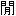

| 「いい人」が損をしない人生術 (PHP新書) | |
| 斎藤茂太 | |
| PHP研究所 (2005) | |
「いい人」が損をしない人生術
斎藤茂太
まえがき
僕はこれまで、自分でも数えきれないくらいの本を出してきました。
最初は、父・斎藤茂吉についてのこと、そして、その妻であり僕の母親である斎藤輝子の思い出話といった著述でした。
さらに精神科医として知見した性格論やわが身と家庭をふりかえった家族論などを書きはじめ、各出版社のみなさんから、つぎにこんなテーマはいかがですかといわれるままに、「八方美人」的に筆を走らせました。
昭和三十九年の『茂吉の体臭』（岩波書店）、同四十一年の『快妻物語』（文藝春秋）あたりから指を折ると、もう四十年におよぶ執筆半生になります。
男性論、夫婦論、教育論、性格論、人生論、結婚論、人間関係論、お酒の話、旅の話、そして定年後の生き方論、死生論と、テーマはやはり八方にわたりました。
「論」としましたが、いずれの本も、論考しつつ、具体的にわかりやすく書いたもので、みなさんより多少なりとも人生の先達が、考え方や生き方をアドバイスしたという体裁になっています。
数年前のことです。僕の本を、とくに文庫本を多く出版してくれているＰＨＰ研究所の出版部の方が拙宅にお見えになり、これまでの著作から、そのアドバイスの「いいとこどり」をしたいと、虫のいいことをおっしゃったのです。
「いいとこどり」といいましたが、僕はこれまでの本でとりたてて気の利いた至言や警句をはいたつもりはありません。人として世の中で生きるための僕なりの処方箋を書いて、読者に渡したのですから、「いいところ」があるとするなら、その処方箋によって、元気が出たり心が穏やかになったりした読者のみなさんに訊ねなければならないでしょう。
ただ、僕の人生観や人間観にもとづいて記したさまざまな処方箋には、つねにつぎのことがスタンプされていたはずです。
笑顔で生きよう。
「いい人」でありたい。
それだけのことを、くりかえしくりかえしお話ししたのです。ですから虫のいい「いいとこどり」といっても、畢竟、このふたつの言葉でしかないようです。
さて、編集人は、さっそくインタビューをはじめられました。
その口述は二回ほど、のべ八時間におよび、後日かなり分厚いワープロゲラになって、僕の手元に置かれました。しかし、そのゲラに目を通すことがなかなか捗りませんで、また、悠揚たる編集人は、僕を決して急がせたりしないため、こちらも、半ば忘れかけて（わざと）いたのです。
去年の冬、ＰＨＰ新書の編集者君から、「先生、例の企画はいかがで」、と、悠揚たる会社もついに痺れを切らしたような、それでいて、まだどこか余裕のあるようなご来信があったのです。どっこい敵は忘れていなかった！
ただ、そのころ、僕は体調をこわしていたため、まだ色よい返事ができなかったのですが、新書編集者君は、では、こちらですこし進めてみます、というのです。じつはそのとき先方では、僕のこれまでの著作の大半を読み込んでいて、「いいとこどり」の摘出がすでにすんでいたのです。八時間の口述をまとめ、巧みにミックスして、第一次のゲラができつつあったのです。
そうであれば、僕も、もう年と体調のせいにはできないではありますまいか。届けられたゲラとの、いままで何十回と経験している「朱入れ」作業をはじめることにあいなったのです。
本書には、僕の忘れえぬ「エピソード」やこうすれば「人生は楽しい」といった知恵、また人から聞いたとても「いい話」が盛り込まれています。それに感動したり、なるほどと納得したりした当時の心情を、ふたたび綴りました。旧聞に属することも否みませんが、僕の執筆半生の、それらは貴重な宝物なのです。
僕の、膨大な原稿から、そんな宝物を集めて整頓してくれた槇野修氏とＰＨＰ新書出版部の林知輝氏に感謝して、はじめの挨拶は終えます。スピーチは短くあるべきといいますから......。
平成十七年四月吉日
斎藤茂太
その一――夫婦関係
その二――親子関係
その一――旅の効用
その二――酒の功罪
第１章 もはや「以心伝心」ではいけません
だいぶむかしの旅の話からはじめることになります。
四十年あまり前に、はじめて旧ソ連を旅行したときのことです。当時は直接シベリアへ乗り入れる空路が開かれていませんので、ソ連の船で沿海州のナホトカに上陸するのがもっとも早いコースでした。
そこで入港の二時間前に停船して入国のための検査がおこなわれます。警備艇から入国管理官や税関吏、検疫官がいっせいに船に乗り込んできます。船客はそれぞれの部屋で荷物を抱えて待機しているのですが、役人たちはなかなかあらわれず、待っている時間が長くなればなるほど不安感が増してゆきます。
見知らぬ土地への旅は、日本国内でもいささか緊張するものですが、とくに外国、それもなじみの薄い共産圏への旅ですから、人より旅慣れていると自負していた僕もドキドキして検査を待っていました。
やっと僕の船室に回ってきた制服姿の役人たちは、硬い表情で所定の検査をはじめます。僕はその役人の顔色を盗み見るようにうかがい、検査官たちが仏頂面になれば不安はなお増します。じつにイヤな時間でした。
このような、なんともイヤな時間はその後もしばしば経験しました。
オーストリアのウィーンからむかしのチェコ、ハンガリーを経てユーゴスラビアのベオグラードまでドナウ河を船で下ったときもそうでした。
そのソ連船「ボルガ号」がブダペストを出港すると、今夜十二時に入国検査があるとアナウンスがあり、船内は緊張感に包まれました。
そして、やはり長いこと船室で待たされたあげく、制服の役人がふたり入ってきて、しかも「ノースマイル」で、無遠慮に僕の顔と船室内をジロジロと見まわし、強面でパスポートをチェックして出ていったのです。いい気持ちはしません。
またそのときの旅で、ベオグラードから空路ドイツに向かうときも、空港の両替所の女性は完全にノースマイルでしたし、出国カウンターの役人もジロッと人の顔を見るし、まことに不愉快な感じでした。
さらに、二十年ほど前に訪れた中国でも、ある友誼商店（外国人向けの店）の女店員に、じつに不機嫌な対応をされたことがあります。僕が品物をいろいろ選んでいる横で露骨にイヤな顔をして、ツンツンとした態度でこちらに接するのです。
また、アメリカに行ったとき、ラスベガスからグランドキャニオンまで乗った航空会社のキャビンアテンダントも、まさにヒステリックといっていいほどの態度で、客が足下に置いた荷物が通路にはみ出ているといって叱りつけるし、それを蹴飛ばすように椅子の下に押し込んで機嫌の悪いことはなはだしいものがありました。
こちらは旅人で緊張と不安に満ち、なおかつ、逆らえない立場にいるわけですから、そんな相手の態度に一喜一憂し、しかも自分が情けなくなるほど卑屈になって、それが自己嫌悪に陥らせるのです。そんな心理状態に追いやる彼らは、まことに許せない人種といっていいのです。
ところが、これも、ずいぶんむかしのことですが、かつて僕の病院に勤めていた若い医師がカナダに留学していて、モントリオール空港に着いた僕を迎えにきてくれたことがありました。
その彼が、僕らの旅行の世話をする役人に、僕のことを精神科医だと紹介したら、その役人は若い医師に向かって、
「じゃ、お前さんは患者かい？」
と、片目をつぶってみせたのです。
こういう洒落たジョークまでは期待しませんけれど、見知らぬ国を旅する異邦人にたいして、それぞれの国のお役人さんや関係者たちは、ちょっとだけでも「にっこり」としてくれればいいのです（もちろん日本側も）。
その「にっこり」が、おおげさにいえば「世界平和」のはじまりになると思うのですがね。
すれちがうときに視線が合うと、ちょっとニコッとしたり、わずかにうなずくような表情を示したり、ときにはいたずらっぽく軽くウィンクしたりするのが、西洋式な「微笑挨拶」で、とくにアメリカ人に多く見られるようです。目と口元に軽く微笑をたたえるのです。
この「微笑挨拶」を僕はつねづね悪くないな、と思っていますが、さて私たち日本人にこのような仕草が真似できるでしょうか。
微笑といえば「モナリザの微笑」が有名ですが、これにまつわる笑い話があります。
ある美術評論家が、知人につぎのようにいったというのです。
「モナリザの微笑を見ていると、つい家内を思い出すよ」
「おやおや、お惚気かい」
「いや、あの微笑は、僕がウソをついているなって思っているときの家内の顔だね」
これは、なかなか傑作なジョークです。
まあ、それはともかくも、欧米人がまったくの他人にも、この手の微笑挨拶を示すのは、自分はあなたに「敵意」はありませんよ、というサインなのです。私たちも、会社内とか近所の知り合いには示すことはありますが、同じ車両に乗り合わせた人やホテルのロビーなどひとつところで視線の合った人には、このような微笑は投げかけません。むしろ険しい視線を向けることになってしまいます。
しかも、他人に意味のない微笑をもらすと、この人は妙に親しげで気味が悪いと思われかねません。とくに初老の男性がうら若き女性にニヤニヤすれば、挨拶どころか遠ざかっていくでしょう。
それは私たちが慣れていないからです。さらっとした「微笑」の挨拶になっていないわけです。
さらにいえば、これは「以心伝心」という私たちが長いこと信じてきた日本的思想が根底にあって、わざわざ態度にあらわさなくてもわかり合えるという環境に甘えていた結果といっていいでしょう。
しかし、時代は二十一世紀の混沌として、人それぞれに価値観が多様化しているときです。しかも、昨今の殺伐とした状況があります。乱暴で怖い事件も日常です。
もう、「お互い日本人だから以心伝心で」、とくに「笑みの眉を開」かなくても安心だというわけにはいかないのです。
手刀とは、相撲で勝ち力士が行司から懸賞を受けるとき、右手をまっすぐ開いて、中・右・左の順序で空を切るようにする作法で、故実では造化の三神（天地開闢のおり、万物を創造した天御中主神、高皇産霊神、神皇産霊神）に感謝をあらわす動作といわれています。
さて、このような「手刀を切る」といった手であらわす挨拶には、日本的ないいかたちのものが遺されています。
欧米風な微笑挨拶がにがてな方は、この「手」の挨拶を多用するといいかもしれませんね。
人の前を通るときに、軽く手をあげて、「前を失礼」と挨拶したり、人を先にゆかせるときは、手を「どうぞ」と前にやったり、逆に他人からそのような好意を受けたときには、軽く顔の前に手を立てて、「ありがとう」の気持ちをあらわす動作をしたりと、このような手の挨拶はいいものです。
ただこれはどうも男性用の挨拶で、女性にはどうかと思われます。
女性はやはり手より「首」での挨拶がふさわしいようです。すこし首を前に下げて、人の前を通ったり、ちょっと首を傾げて隣りに座ったりされれば悪い気はしません。もちろん男性も女性も、「すみません」とか「お先に」とか「ちょっと失礼」と声に出していえば余計にいいわけです。
中高年の男性には、ときどき人の前を通るとき、「失礼」と腰を屈めながらこの手刀を切る人がいます。あまり仰々しくしますと任侠道のようですが、ともかくさりげない動作で他人に気を配る態度があらわされることはお互いに気持ちをさわやかにします。
「以心伝心」で通じると思って無表情ですますことは、もうやめにすべきでしょう。
不機嫌なお年寄りは嫌われます。
何が気に入らないのか、ブスッとした表情で口元をへの字にして、こちらが挨拶してもろくに返事もしない。とくに男性のお年寄りに、そんなご同輩がいます。
お年寄りといいましたが、いまは七十代以上が、まあ「年寄り」といっていいでしょうから、彼らは、「男は人前で歯を見せるな」「男は意味なく笑うな」と教えられた年代で、そのため苦虫を噛みつぶしたような表情をしているとも思われますが、それにしても、ジロッと他人を見る視線には、おおいに不機嫌さを感じるのです。
さらに、四十代、五十代と思われる現役世代の男性にも同様の不機嫌な顔をした人をよく見かけます。
世の中の不幸をひとりで背負っているような表情をしています。その人の不機嫌さの原因が周りの者にわかれば、それなりの対処の方法も考えられるでしょうが、何がというわけでなく、社会や他人にたいして漠然と不機嫌なようなのです。
不機嫌な人にはだれも近づきません。
僕などそんな人を見かけると、ちょっと肩でも叩いて、「どうしたのですか」と声をかけたい気もしますが、相手が胸にどんな匕首を呑んでいるかわからない昨今のことですから、そんな余計なお世話もできません。
ご自分だけで不機嫌ならまだ勝手なのですが、このような人が、せっかくエレベーターの扉を開けて待っていてくれた中学生に、さも当たり前だといった大柄な態度を示せば、中学生は「このくそじじい」と思い、不機嫌になることまちがいありません。そして、もう二度とエレベーターの「開」を押して待っていてやるもんか、となるでしょう。
不機嫌さを蔓延させてはいけません。
このケースと逆の場合、エレベーターの「開」ボタンを押して待っていてくれた中学生に、怖そうな表情のお年寄りや中年の男性が、「どうもありがとう」と声に出してお礼をいったら、その中学生は照れたとしても、気分はいいに決まっています。
もちろんお年寄りや中年男性ばかりではありません。相手のちょっとした好意（気配り）には、万人が「サンキュー」の言葉なり笑顔なりで応えるべきです。
それを大人がふだんから実行すれば、若者たちもやがて真似するようになるでしょう。ただ、反対に、大人が扉を開けて待っていたとしても、若者たちからの「サンキュー」をつねに望んではいけません。自分たちの「サンキュー」が、じわじわと彼らの態度にも浸透することを、期待して......というように思うことにいたしましょう。
人を気分よくさせるには、朝の挨拶が大切です。
おやおや、当たり前のことを、とおっしゃるかもしれませんが、一日のはじまりをいい気分で迎えられるかどうかは、朝いちばんの挨拶にかかっています。
「おはよう（ございます）」
「いってきます」
「いってらっしゃい」
明るく声をかけたり、かけられたりすることが、私たちの今日一日の気分を晴れやかにするのです。親は、たとえ子どもが返事をしなくても、しっかり「おはよう」といってあげましょう。
そして、近所の人にも、返礼を期待せずに、挨拶することです。黙って通りすぎようとするときに声をかけられると、相手は多少ビクッとするかもしれませんが、決して不愉快なことではありません。自分の存在を認めてくれたひと言なのですから、気分はいいはずです。
こっちが挨拶しているのに、返事もしない、と怒ってはいけません。
挨拶は「愛嬌」と思って、「挨拶おじさん・おばさん」になりましょう。
相手の気分をいい方向にもっていくようなタイミングのいい挨拶ができて、しかも相手からの返事がないことに穏やかでいられる「無意識の意識」で朝の挨拶がにこやかにできれば、もう挨拶達人といっていいでしょう。
反対に、朝から気分を滅入らせることがあります。
その代表的なものは、出かける旦那さんに奥さんがお金の話をすることで、何が足りないとか、あの支払いはどうするといった話を、仕事に行く出がけの玄関でされるほどげんなりすることはありません。
「朝から、そんな話はするな！」
と思わず怒鳴りたくなるでしょう。そして、気分はすっかり落ち込んでしまいます。
会社（僕の場合は病院）に着くそうそうにお金の話もやはりイヤなもので、せっかくの「やる気」が失せてしまいますから、お金の話は、家庭では夜に食事でも終わって一段落したときにするべきで、会社では、すこし仕事をこなしてからの時間帯を選んで、「ところで......」といってからにしたいものです。
朝のいい気分は人を一段高みからスタートさせることができるのです。十分に気配りをしたいものです。
ところで、ちかごろ、よそいきの服とふだん着の服の差がなくなっているように思います。
どこに出かけるのもジーンズでという人がいます。出版社や放送局などに勤める人に仕事着としてジーンズをはいている姿を多く見かけます。ジーンズにかぎらず、なにごとも形式的でないのがいいことだという風潮があるようですが、はたしてそうでしょうか。
若い人の服装を見ていますと、友だちと遊びに出かけるときのファッションは、それなりに身についていて彼らなりに似合っているようです（そのセンスがいいかどうかは別ですが）。ところが、いわゆるリクルートスーツを着たり、冠婚葬祭で礼服を着せられたりしますと、とたんにどこか非文明人のズルズルとした着こなしになってしまいます。
若者ばかりではありません。中高年のみなさんも、家で寛いでいたままの格好で街を歩いていますし、電車に乗っています。むかしは一歩家を出るときは必ず、靴下をはいたりズボンをはきかえたり、髪の毛をなでつけたりしたものです。
家から外へ出るのは、人前に出るということですから、おおげさにいえば社会という「舞台」に登場することです。僕らの世代は、「どなたが見ていらっしゃるかもしれないのですから、きちんとした格好で出かけなさい」といわれたものです。
また、家では挨拶や返事も、「ああ」とか「うん」とかですませていても、玄関を出ればそうはいきません。よそいきの言葉が必要です。
「よそいき」ということが「建前」とか「偽善」というようなニュアンスとして捉えられ嫌われて、「ふだん通り」が「本音」とか「誠実」と意味されて歓迎されています。
しかし、外に出て、相手が「おはようございます」と挨拶してきたときに、いくら自分の気持ちに「誠実」で、そのときの「本音」だからといって、「ああ」とすげなく返事したり、無視したりすれば、人格を疑われます。
人中でよそいきの「お芝居」ができないのは、私たち日本人の性質にあります。
それは他人にたいして無愛想であるということで、そして、先に述べたように、それは他人にたいしてちょっとした会釈がうまくできないということに通じるのです。
新幹線や航空機のなかで隣り合った人に軽く会釈して席に着く。病院の待合室で空いている椅子に腰掛けるときかすかに頭を下げて座る。また、エレベーターに乗るとき、「開」のボタンを押してくれた人に、すみませんという気持ちで会釈する。こんななにげない仕草が、いまはなかなか実行できないのです。
無愛想な時代です。
さらにいえば、他人を拒絶して睨みつけるような時代です。とくに都会においてはことさらです。
ことわざにあるように「袖振り合うも多生（前世からの因縁）の縁」ですから、ちょっとした出会いも「多少」の縁と心得て、お互いにやわらかい笑顔で接したいものです。
私はこれまでずいぶん多くの国を見てきました。その経験からいっても日本人は同胞にたいしてまことに無愛想な国民であるといわざるをえません。
それに反して欧米人は、姿形では同国人かどうか判別しがたいということもあるでしょうが、隣り合った他人にはまず笑顔で接します。それは多民族の集合にいるという意識があるからでしょう。
さて、そんな日本人の場合ですが、こんなことがありました。
僕が、東北のある病院に知人のお見舞いにいって、帰りに玄関のドアを引いて出ようとすると、つぎからつぎに人が入ってきます。僕はドアを引いたまま待っていてあげたのですが、だれひとりとして、「すみません」とか「ごめんなさい」とか、サンキューをいわないのです。
心のなかでは、先に通って失礼します、ありがとう、とみなさん思っているのでしょうが、それを口に出してあらわさないのです。このようなことは僕だけではなく、みなさんも経験していることではないでしょうか。もちろん、黙って通るほうも含めてですが。
気持ちを表にあらわさない、これは、くりかえしますが、「お互いわかっているじゃないか」「あらためていうようなことではないじゃないか」という日本人特有の「以心伝心」にもとづいているのです。
日本人は同一民族であるというと民族学者さんからは文句が出るでしょうが、同じ列島に長いあいだ暮らしていて、目標も生活もだいたい似たようなものだから、わざわざ細かいことに「サンキュー」でもなかろうということですんでいるのです。
でも、もうそんな「以心伝心」に甘えている時代ではありません。
その場にいる者どうしが、その場を平穏にしたい、気持ちよく過ごしたいというのなら、ささやかな努力をしなければならないのです。
乗物の座席を倒すときはうしろの人に声をかけるとか、降りるときは元に戻すとか、狭い道を横に広がって歩かないとか、靴音をむやみに立てないとか、こう当たり前のことを書いているとイヤになりますが、なにげない仕草がその場の空気を暖めるのです。そして居心地のいい空間を生み出すのです。
ただ、公共の場での人々のマナーは、以前にくらべれば数段よくなっていることは確かです。
年配の読者はご存じでしょうが、むかしの汽車の車内はひどいものでした。都心や近郊を走る電車にも灰皿がありましたし、ホームの柱にも灰皿がついていましたから、いまでは想像もつかない喫煙天国で、また、食べ終わった駅弁のゴミなどは座席下に捨てるのが当たり前、といったありさまでした。
夏目漱石の『三四郎』では、三四郎が車中で弁当を食べて、
「この時三四郎は空になった弁当の折を力一杯窓から放り出した」
とあり、驚くほどのマナーの悪さです。
また、内田百の『奥羽本線阿房列車』にも、
「座席はあったけれど中が随分きたない。腰を下ろす前に、蝙蝠傘の石突きで座席の足許に散らかった紙屑や弁当函の殻を一所に寄せていたら、お酒を持ち込んでくれた駅員が、どこからか手帚を持って来て、綺麗に掃いてくれた」
と車内の汚れぐあいを描写しています。
しかし、いまは新幹線や特急列車に乗って見ていると、乗客のみなさんほとんどが空き缶や駅弁の空はデッキのゴミ箱にちゃんと捨てています。それに喫煙にかんしてはますますその場が狭められています。
ですから、公共の場のマナー同様に、人と人とのさりげないコミュニケーションも、いっそう和やかになることを期待しておきます。
僕はこれまでいろいろな国をめぐって見てきましたが、ヨーロッパのなかではアイルランド人がもっとも質朴な人たちではないかと思っています。
日本風に書けば「愛蘭土」となり、この美しく愛らしい漢字をあてた往時の日本人の好意を感じます。
以前、首都ダブリンで、小児科医でもあるこの国の大統領にお会いしたことがありました。官邸の広い庭には牛が放たれてのんびりと草を食む光景が見られて、そのことに象徴されるように、アイルランド人はみなどこか農民的な雰囲気をもっているのです。
街でかわいい女の子を見かけて、写真を撮っていいですかと声をかけると、真っ赤になって恥ずかしそうにするのですが、嫌がる様子はありません。その恥ずかしげななかに微笑があって、とてもいい感じなのです。
それにアイルランド人はよく挨拶を交わします。歩いている人間どうしはもちろん、人と自転車、人と車、自転車と車、車と車、みなすれちがうときには必ず、めくばせをしたり、手をあげたり、敬礼したりするのです。それは自然で気持ちのいいものです。
さらにいえば、彼らはとてもおしゃべりです。「ウェールズの歌、スコットランドのケチ、アイルランドのおしゃべり」といわれるほどで、寒くきびしい自然、痩せた土地、しかも人口も少なく、人と話すことが数少ない楽しみなのでしょうが、それ以上に、おしゃべりをすることで知らない人とすこしでも仲良くしたい、自分はあなたにこれほど好意をもっていて敵意などありませんよ、ということを示しているのです。
そんなおしゃべりなアイルランドは、文学の宝庫です。
たとえば、詩人のＷ・Ｂ・イェイツ、小説家で『ガリバー旅行記』の作者ジョナサン・スウィフト、『ユリシーズ』のジェイムス・ジョイス、劇作家で小説家でもあるオスカー・ワイルド、サミュエル・ベケットなどが知られています。小泉八雲（ラフカディオ・ハーン）もアイルランド人です。さらにいえば、アメリカ大統領になったジョン・Ｆ・ケネディやロナルド・レーガンもアイルランド系でした。
アイルランドだけでなく、欧米において、おしゃべりは一種の自己防衛なのです。
ヨーロッパにはいろいろな民族があふれていますから、積極的にコミュニケーションをとらなくては、互いに融和がはかれないわけで、それがおしゃべりだったり、ちょっとした笑顔だったり、私たちから見ればおおげさと思えるジェスチャーだったりするのです。
そのようなことは、アメリカ人のジョーク好きにおいても同じことです。
アメリカは世界中からさまざまな民族が集まっている国ですから、それぞれの腹のなかにどんな「匕首」が呑まれているかわかりません。無愛想だったり、不躾に睨みつけたりすれば、たちどころにその「匕首」は抜かれます。
先年、日本人留学生が、これは睨みつけたのではありませんが、ある家を訪問して、言葉が通じず射殺された事件がありました。どのような事情だったのか僕はよく知りませんが、アメリカでは他者との関係が、かなり緊張状態にあることはまちがいないようです。
それを穏やかにさせているのがお互いに交わす笑顔とジョークなのです。みんながうまくやっていくうえで欠かせないものといえましょう。
アメリカでよく知られているジョークにレーガン元大統領の秀逸なひと言があります。
レーガン氏が現役の大統領のとき、あるホテルから出てきたところを暴漢に狙撃され、すぐさま病院にかつぎこまれました。いざ、手術となったとき、レーガン氏は執刀の医者に、
「君は共和党の支持者だろうね」
と訊いたというのです。このジョークはアメリカ人には大ウケだったようです。
このようにアメリカの政治家に欠かすことのできない要素はユーモアです。演説においてもまず笑いをとることが大切で、しかも最初に聴衆の心をつかむために、まずは一回笑わせる。でも一回だけではダメで、話のなかほどにさらにもう一回か二回の笑いをとるくらいでないと評価されないのです。
ジョークは簡単に出るものではありません。たえず考えていないと気の利いたセリフは出ませんし、社会常識や教養の程度が高いほどおもしろいジョークが出るのですから、政治家にかぎらず、ユーモアのセンスがその人物評価につながるのです。
また、アメリカではユーモアのない教師はその資格がないといわれて、大学教授もいかにして学生たちを笑わせるかに腐心していると聞きます。
あるアメリカの作家はつぎのようにいいます。
「人間には耐えられない侮辱がふたつある。ユーモアのセンスがないという断言と、苦労知らずだという断言だ」
プロの笑顔というものを見習いましょう。
芸人やお笑い系のタレントとかキャビンアテンダントとか、また、客商売のプロは、どんなに悲しいことがあっても、お客さんの前では笑顔を絶やすわけにはいきません。
そのプロの笑顔を私たちも真似したらいいのです。腹のなかと外見で見せるパフォーマンスは違っていて、それで欧米の社会はなんとかうまく保たれているのです。
私たちも、ひと言声をかけるのでもいい、笑顔を見せるのでもいい、とにかくなにかひとつのパフォーマンスを相手に示すことが対人関係の潤滑油として大切です。
このような相手への笑顔の働きかけは「先んずれば人を制す」と心得ておくことです。
「ユーモアとは、にもかかわらず笑うこと」
という箴言があります。
日本人はジョークが下手で、ユーモアのセンスに欠ける民族のようにいわれていますが、ちょっと江戸時代をふりかえると、狂歌や川柳には卓抜なユーモアがふんだんにありますし、落語という独特の話芸を発達させた歴史ももっています。
ただ、笑いを不まじめなもの、笑うことを恥とする武士階級が長いあいだわが国を支配してきたこと、それが明治以降の男たちに引き継がれ、とくに軍隊において、兵士たちには「歯を見せるな」という上官の叱責があったのです。
また儒教の影響もあって、大の男が「歯を見せて笑う」ことは成人男子にあるまじき軽々なこととされたのです。
日本の官僚や政治家にはもっとユーモアが欲しいといわれます。そのセンスが彼らにないことも確かですが、それよりユーモアを許さないマスメディアや国民がいるということではないでしょうか。ジョークは不謹慎だとする民意です。国会審議を見ても、ユーモアのユの字もありませんでしょう。
まじめで湿っぽく、すぐにカッカとなる、またなにかと悲壮がる、そんなやりとりがしばしばなのです。さらに安直な正義感が横行するといった状況です。もっと余裕のある発言と聴く耳が欲しいものです。
ところで、アメリカのジェームスとランゲという学者は、
「人は悲しいから泣くのではなく、泣くから悲しいのだ」
という理論を立てています。それに従えば、
「人はおもしろいから笑うのではなく、笑うからおもしろいのだ」
ということになります。上方落語の爆笑王といわれた故・桂枝雀師匠は、噺の枕で、つぎのようにいいます。
「僕の噺がおもしろかろうとつまらなかろうと、みなさんは笑わなければいけません。そうして笑っているうちに、僕の噺が自然に可笑しくなってくるのです。可笑しいから笑うという考え方はまちがいです」
と軽妙に笑いをとっていました。
地方に行くと、「笑い講」といったものがあって、参加者一同、とにかく大笑いをする。最初はわざとらしい笑い声を出しているのですが、しだいにほんとうに可笑しくなって、笑い転げるようになるのです。
笑っていれば、楽しい気分になる。悲しくつらいときも、まず笑ってみることです。
それから、ちかごろ気になっていることがあります。それは若い人が、「ハイ」と返事をしないことなのです。
たとえば、僕が病院で診察をしていて、つぎの患者さんを呼んでくださいと看護師にいうと、「ハイ」という返事が返ってこないのです。わかっていないのかというとそうではなく、ちゃんとつぎの患者さんを診察室に通してくる。やるべきことはやっているのですが、その場で「ハイ」が言葉として口から出ないのです。
これが不思議です。
「あの棚から何々という本をとって」といったとします。ふつうなら、「ハイ」とか「何々ですね」といった受け答えがあってしかるべきですが、それがなく、本がぬーっとさしだされるのです。返答が面倒くさいのでしょうか。
やることをやれば無愛想でもいいというわけにはいきません。
頑固な職人ならいざしらず、たとえば旅館の女将がひと言も返事をしなかったら、その旅館はつぶれてしまうでしょう。
「おいでやす」という京都の料亭や宿の女将のたったひと言が、お客とその店をぐっと親密にするように、声をかける、それに返事をするというルールが当たり前でなければなりません。
さきほどお話しした東北の病院の玄関のような場合、アメリカ人ならば言葉に出さなくても、ニッコリと笑顔を見せるか、もっと愉快な連中はウィンクしたりするでしょう。いろいろな場面で彼らは、内心は「この野郎」と思っていても、表面はにこやかにふるまう術が身についているのです。
僕は、やはり、対人関係というのはドラマだと思っています。そのドラマに登場するのですから、十分に「役者やな」と相手に思わせなければ、いいドラマにはなりません。
手話の第一人者である丸山浩路さんは、目であいづちを打つことをすすめています。
感動的な話や悲しい話には、深く目をつぶったり、じっと下を見たり、相手の目を見つめたりして、こちらの感情を伝えることができるというのです。また、相手が話につまったり、いいよどんだりしたときは、気持ちばかり大きく目を見開いて、話のつづきを促してみるとか、目の表情も大切なコミュニケーションの手段なのです。
最近、アイコンタクトという言葉がさかんにいわれます。目の動きや表情で意思を相手に伝えることで、むかしからいう「目は口ほどにものをいう」そのものです。
私たちの日常生活でも、なにげなくこのアイコンタクトはおこなわれていて、たとえば買い物のときに店員さんに向ける視線、車を運転していてすれちがったドライバーと交わす視線、酒場で酒のおかわりを頼むときの視線、これらは無言のうちに意思が通じるものです。
このような目の表情をもっと豊かにしようではありませんか。
日本人の黒目がちな目は目の表情をあらわすのに適しているはずです。いきいきとした目の表情はその人の快活さをあらわすものです。
ただ、反対に日本人の黒目はくっきりしているために、視線のきつさもあります。
「むやみに人をジロジロ見るものではありません」と教えられたように、じろりと見られるとなにか不愉快になることがあります。
このごろの人、とくに若い人の視線はいどみかかるようで、無遠慮で、ジロッと人を見る。そこになにか敵意さえ感じられます。あのようなきつい視線は日本では不愉快程度で許されても、海外ではとても恐ろしいことになりかねません。
やわらかく表面をさらりとなでるような視線で人を見る、目にやさしさをたたえるような訓練も私たちには必要でしょうね。
お互いに話をするとき、まず相手のプライドを傷つけないように注意することも人間関係においては基本中の基本です。
ふだんのなにげない会話のなかでもいちばん大切なことは、相手のプライドを損ねないようにすることでしょう。プライドを傷つけたら、そのとたんに人間関係が崩れてしまいます。
プライドというものはまことに繊細なものですから、「えっ、そんなことで」と思うようなこちらの発言で相手が傷つくことが往々にしてあります。
「先日、時間があったので何々という映画を観たんだよ。なかなかよかったよ」
「あれか、金ばかりかけた愚作だという評判だよ」
とか、
「知り合いの息子が何々会社に就職してね」
「そうか、でもあそこは負債がだいぶ多いらしいな」
など、どうということのない会話でも話しかけたほうのプライドはかすかに傷ついているのです。
のちに書きますが、すぐに否定的受け答えをすることは要注意です。でも世の中には、否定的会話が癖になっている人がいて、反論めいたことを返したほうが、知的に見られると勘違いしているようです。
「よかったか、じゃ、おれも観てみるか」
「へぇ、業界では知られた会社じゃないか」
などと、まず話を合わせるべきで、その後その話が続くのであれば、徐々に自分の意見を述べるのが「やわらかないい人物」というものでしょう。
僕がとくに気になるのが、テレビなどで一般のお年寄りが登場する場面で、アナウンサーやインタビューをする人が、「おじいちゃん」とか「おばあちゃん」と呼びかけることです。親しみをこめたつもりなのでしょうが、いかにも年寄りは、だれも同じだと見下した感じがすると同時に、いかにもざっくばらんに番組を進めているのだという意図がいやらしく見えてしまいます。やはり、きちんと名前を訊いて、その名前で呼ぶべきでしょう。
僕の母・斎藤輝子がテレビに出演するとき、ひとつ条件があるといったのです。それは、「おばあちゃん」と決して呼ばないことというものでした。
孫や子どもならばともかく、知らない人から「おじいちゃん」と呼ばれたら、僕もいささかムッとしますよ。
前述しましたように、欧米人の紳士淑女の公共の場でのマナーや挨拶のしかたを私たちも参考にすべきで、これからますます国際化する時代において、社交性といいますか、見ず知らずの人たちにも、ちょっとした気配りをすること、これがなにより「いい大人」としてのはじまりでしょう。
ただ、初対面の対応では、やみくもにアメリカ人やヨーロッパの人たちのやり方を真似してはいけません。というより、彼らのあからさまな自己主張は私たち日本人には似合わないし不自然なのです。
向こうの連中は、自分をしっかり売り込みます。自分にはこんな才能があり、こんな仕事ができる、だから給料はいくらいくら欲しいと明確にいいます。そこでは堂々と自分の言い分を主張しているのです。もちろん、イエス・ノーもはっきりしています。
このような態度を日本人が真似するのは、いくらいま日本がアメリカナイズされたとはいえ、なかなか世間一般では通用しません。
私たちは、まず腰を低くして、相手を喜ばせて、いい気持ちにさせることから人とのコミュニケーションをはじめなければならないでしょう。
相手にたいして「畏れ入る」という姿勢を示すこと、これも大切な要素です。
最近は、ふつうの人でもなんだか怖い人が多くなっています。それも世の中がギスギスしているせいでしょう。景気のいいときは生活も楽だから、イライラや怒りを心に籠らせる余裕もあるのです。いまはちょっとつきあいにくい人たちがふえています。
公共の場で、たとえば電車の車内とか、混雑している道路だとかで、マナーというか礼儀の悪い人がいます。
一方が強引にすれば、他方が輪をかけて強引にするという状況です。自分たちさえうまくいけばいい、人に譲るという気持ちがない人が多すぎるようで、あわせて「人様に迷惑をかけない」という教訓が忘れられています。
世間一般で、人と人の出会いにおいて、そもそも初対面は緊張するもので、これは動物的な本能といっていいものです。ですから、最初のひと言ふた言が非常に大切なのです。
まず、最初は腰を低くすることです。
たとえこちらがいくら相手より上の立場であっても、はじめは腰を低くして接するべきなのです。その後、相手とのコミュニケーションが十分にとれた時点で、だんだんと立場を逆転すればいいのです。
畏れ入るという姿勢がともかくも最初は肝要と心得るべきなのです。
人にはさまざまな性格があります。
内閉性、非社交型。これは、ひとりでいるほうがいいという性格で、文学者などはみなそうです。
また、反対に気持ちが外に向かう外交型。
そして、僕の親父（斎藤茂吉）のような百パーセント完全主義者のまじめ人間、これは粘着性の性格です。
さらに、ヨーロッパではヒステリー性格といいますが、自分をひけらかす自己顕示性格。
このなかで、つきあうのがもっともむずかしいのが、粘着性の性格です。うっかり冗談もいえません。こちらがその場を明るくしようと冗談をいって相手が喜ぶと思ったら大まちがいで、「それはどういうことですか」とまじめに反駁してきます。
このようなタイプの人には、飛び込んでいって向こうのペースに巻き込まれるのもひとつの方法かもしれませんが、僕は、近づきすぎず離れすぎずの方法をとります。
パーティなどでそんな人と顔を合わせたら、今日はちょっと寒いですね、と軽く時候の挨拶程度を交わして、サッと離れます。ひと言も口をきかないのも、知り合いだからおかしいわけで、挨拶ぐらいはしたほうがいいでしょうね。
「つかず離れず」です。
じつは、このつかず離れずの要素は、家族においてもある程度必要なことです。
いま、僕の家は十数人の大家族です。というのも、敷地にバームクーヘンを半分に切ったような家というか、マンションというか、そんな新規なものを建てて、それを五世帯のピースに仕切ったのです。これは家族にとっての一大実験で、三世代が全部集まったのです。
そして、いっしょの敷地に住むにあたっての僕の方針が、
「つかず離れず、土足で踏み込まず」
なのです。
最初の設計では、それぞれの家のなかにドアをつけて、隣家と行き来ができるようにしたのですが、僕はそれに反対して、隣りの家に行くにも一応ワンクッションおくため、玄関を出て、それから隣りの家のベルを鳴らして、というように独立性を確保しました。
また、行くときも必ず電話をかけてからにすることを約束させました。まあ、小さい孫などはいきなり侵入してくることはありますが、大の大人がいきなり「お醤油貸して」と来るのはいけません、ということです。
「山嵐コンプレックス」、または「山嵐ジレンマ」という言葉があります。
これはショーペンハウエルの寓話から心理学的な用語になったもので、どういうことかというと、二匹の山嵐がいて、寒いから体を寄せ合ったら、お互いの針が刺さって怪我をした。痛い痛いと針を抜いて、また寒くなってくっついたら、また針が刺さって怪我をする。そんなことをくりかえしているうちに、お互いに怪我をしないで、しかも暖かい適度な距離を見つけることができた、という話です。
これは人間どうしの適切な距離関係をみごとに示唆していると思います。
僕の弟は作家の北杜夫です。本名は斎藤宗吉で、僕とは十一歳離れています。
その彼が、
「兄貴には妙に人望がある」
といったことがあります。
「体格がいいから、押し出しが効くと思われてのことだろう」
と応えると、それもあるかもしれないが、なかなかに人の信頼を得ているように見えるのだ、といってくれたのです。
まあ、そう思われることはうれしいことです。これこれまで日本精神科病院協会の会長や日本旅行作家協会の会長、アルコール健康医学協会会長など、そのときそのとき数多くの役職に就いてきましたが（祭り上げられたのかな？）、これらは僕が長男であることが影響しているのかもしれません。
長男はその夫婦のはじめての子どもですから、大事に愛情深く育てられます。でも、その幸せは弟や妹が生まれるまでのこと。下が生まれると、
「あなたはお兄ちゃんなんだから我慢しなさい」
「あなたはお兄ちゃんなんでしょ、しっかりしなさい」
というように抑制されて、しかも親の顔は小さい弟・妹に向けられますから、自然と家で孤立するようになります。
そこで長男は周囲のバランスを考えるようになり、活路を交友関係に求めることになります。僕はとくにそうでした。
僕は自分を「八方美人」だと思っているのです。
本業の精神科医の仕事が忙しいのに、いくつもの原稿依頼を引き受けてしまったり、講演を頼まれて「イヤ」といえなかったり、旅行から帰ってきて熱があるのにパーティに出席したり、自分ながら大丈夫かな、とあきれることもしばしばです。そのときは、断ればよかったと悔やんだりしますが、時間が経つと、またいくつもの「頼まれごと」を引き受けてしまうのです。
家内からはありがたく「イエスマン」という称号をいただいております。
人が僕を必要とするかぎり、僕はその人の要望に応えたいという気持ちがあります。
「人に尽くす」
というといささかおおげさになりますが、僕の人づきあいの根底には、その姿勢があるといってまちがいがないようです。
いわばチャリティの精神です。
精神科医の仕事は「思いやり」や「寛容」の気持ちがなければできませんから、それがほかの仕事や交際に反映しているのでしょう。
そこで、長男型「八方美人」からの提唱ですが、
「まず人のためになにかしてあげよう」
という姿勢をもつことを心がけたい。
自分の家の前を掃くならちょっと隣りまで、の気持ちです。会社で同僚が慣れない仕事に戸惑っているなら、やりやすいように「すこし手伝ってやろうか」の気持ちです。
人間関係は、まずお互いの警戒心や、それにともなう防衛本能からはじまります。それを解くことが親しくなる第一歩ですから、「人のために」という心持ちは、良好なコミュニケーションを築く最初の有効なカードになるのです。
母の輝子は生前、
「茂太は悪いところだけ似ている」
と僕が父・茂吉の、怒りっぽいところや暑がりのところや、小水の近いところを受け継いでいることを、そうやって冗談めかしていっていました。
たしかに、僕も怒り出すと、どうにも自分を抑制できなくなることがあって、幼児から青年期にかけては、周囲の人たちを困らせ、中年のころまで、態度に出なくても精神的にいつもピリピリして、この性格は生涯直らないのではないかと、あきらめていたのです。
そこで、性格を直すのではなくて、その性格をなにかで包み込めばいいのではないか、と考えるようになったのです。
それが、ニコニコの笑顔と駄洒落だったのですね。
人は長いことある仮面を被っていると、その仮面がその人の顔になります。僕もずいぶん長いこと「ニコニコ」仮面を被ってきましたから、すっかりそれがいまの僕の顔になっています。
いわば、訓練を積んだニコニコのプロを自任しているわけです。
第２章 対人関係は「お芝居」である
森繁久彌さんから聞いた話です。
私たちが初対面の人と会うことは、役者と観客との関係と同じだ、と森繁さんはいうのです。
役者が舞台に出ることは、何百人もの初対面の人と会うことなのです。出番になって舞台の袖から登場します。そのとき「出」のいい役者は、その瞬間に観客の眼をわが身に引きつけて、やがて観客のすべてを催眠術にかけてしまうのだ、と森繁さんはいいます。
観客を催眠術にかけてしまえば、どんなにおおげさな芝居をしようと多少くさい演技をしようと、その舞台はもう役者のもので、観客はただ見惚れるだけなのです。
さらに、出のいい役者には「華」がある、それはたとえみすぼらしい老人の役でも、憎たらしい悪役でもそうだといいます。
この「出のいい」ということを、私たちもおおいに真似しようではありませんか。
初対面の人ばかりではなく、久しぶりに旧友たちと会う場合でも、その待ち合わせの場所に、出のいいあらわれ方をしたいものです。
「やあ、みんな元気そうだね、顔色もつやつやしているじゃないか」
「今日はとても楽しみにしていたんだ」
「みんなに会えてうれしいな」
など、すこしおおげさでもいいですから、出のいいお芝居をすることです。
また、子どもや孫が家に遊びにきたときも、来てくれてうれしいという表情でにこやかに迎えましょう。
もちろん、仕事上で得意先の人と会うときなどは、いっそう「出のいい」、しかも「華のある」態度が欠かせません。
これは芝居の稽古のごとく日々の修練です。自分の心のもっていきようを稽古することなのです。
科学的に解明されているわけではありませんが、人間は相手の性格について、七十パーセントくらいを初対面のときに判断してしまうといいます。
ですから、自分がどう思われるか、相手をどう思うか、ということは顔を合わせたその瞬間に決まってしまうといってもいいのです。
出会ったわずかな時間に、顔立ち、体型、服装、動作、眼の表情、言葉遣いなど、すべてのことがその判断材料になります。いやいや、勝負は瞬時の真剣勝負です。よくいう「ひと目惚れ」などもこの瞬間に起こるのです。
第一印象というものは不思議なものです。出会った数秒後に「虫」がうごめいて、自分の気持ちを判断するのです。
いわく「虫が好かない」とか「虫が好く」の虫なのです。
古くから人の心のなかには思考や感情を引き起こす虫が住んでいるとされて、
「虫がいい」
「虫の居所が悪い」
「虫が知らせる」
などといって、この虫は「無視」できないものでした。
また、この虫は性格も規定しますから、弱虫、泣虫、臆病虫になったり、また、人を仕事の虫、本の虫、金食い虫にしたりします。
第一印象は身中の虫に決めてもらうのかもしれません。あっ、この人は虫が好く、いや、なんだか虫が好かない、と。その虫は、これまでの対人関係の経験をもとに、微妙な感覚で判定しているのかもしれません。どこがイヤなのかといっても説明できないことが多いからです。
ふたたび、森繁久彌さんに聞いた話です。
森繁さんが初対面の人でもっとも印象に残っているのが、往年の名脇役だった山茶花究さんだというのです。
「はじめて会ったのは昭和十二年ころ、俳優といっても人様に誇れるようなご面相ではなく、カメレオンのような顔つきで、しかも人当たりもよくないから、仲間たちも避けているような雰囲気がありました。でも、なにか、いいものをもっていると思って、ちょっと酒に誘ったのです」
すると、山茶花究さんは、どうせなら自分のいきつけの店がいいといって森繁さんを連れてゆきました。そして、彼がカウンターを前にして座ると店のオヤジが黙ってコップに酒を注ぐ。森繁さんの前にはお銚子とお猪口を置く。それを見て山茶花さんはコップに口を寄せてキューッと飲みはじめる。
そこで森繁さんが気楽に話しかけた瞬間、「黙れ！」とひと言。森繁さんはカチンときた。
「おれはお前と友だちになろうと飲みにきたのに、なんだその態度は」
「シーッ、しゃべるな」と山茶花さん。
なるほどみんながつきあいを避けるとおりイヤなヤツだなと森繁さんは思って、自分も手酌で飲んでいたのです。しばらくして、「お前はいったいどういう男なんだ」と山茶花さんに訊いたのです。すると彼は、
「仕事を終えて、その日はじめての酒を一杯グーッと飲むでしょ、するとその酒が身体にしみわたっていくのがわかるんですよ。まさにその瞬間が酒の醍醐味です。だからそんなときに話しかけられたくないんです。おれの世界を邪魔されたくないんだ」
と、一杯飲んで落ち着いたように話しはじめたのだそうです。
なるほど、と森繁さんは思って、彼はしっかり自分の世界をもっているのだとたいへん気に入ったといいます。
黙れといわれても、とくに虫が好かないヤツとは思わなかったようで、その森繁さんの虫は、やがて、山茶花究さんとまことに「馬」が合う仲になったのです。そして、山茶花さんが亡くなるまで長いつきあいが続いたといいます。
「馬が合う」の語源は、広辞苑によると、乗り手と馬が一体になる意味か、となっていて、はっきりしないようですが、気が合うということ以上に打てば響く仲をあらわしている言葉なのです。虫が育つと馬になるといったのはこんなことです。
「聞き上手」は「会話上手」なのです。
おしゃべりでまず大切なことは、「聞き上手」になることです。
聞き上手な人は会話をスムーズに進めることができます。聞き上手というのは話をしている相手をいい気持ちにさせて、この人ならいくらでも話せるという雰囲気を与える人です。
相手の話を聞くこともやはりパフォーマンスのひとつです。こちらが一方的にしゃべっていては相手が沈黙することになりますから、それでは、相手は会話という人間関係のドラマに参加してくれません。
息子の友人に、「バックブリーカー」というあだ名をもつ男がいたそうです。バックブリーカーとはプロレスの技の一種で、背骨を折るように攻めることをいうのですが、その友人は人の話の「腰を折る」ことが得意で、そのあだ名がついたのです。
たしかにこのようなバックブリーカーはいます。こちらが話をはじめても最後まで聞かないで、会話を横取りして自分のことに引きつけて話をもっていってしまうのです。
「先日、イタリアへ十日ほど行ってきました」
と、たとえば、僕がしゃべりはじめたとします。
僕がゆっくり話をしていてすこし間があったとすれば、ふつうなら、「ほう、お仕事で」とか「どちらを回られました」とかあいづちが打たれますが、バックブリーカー氏は、「行ってきました」の言葉が終わるか終わらないかのうちに、「イタリアね、私も去年行きましてね、ローマからフィレンツェと、いや、いままでの罪滅ぼしで、女房孝行の旅行でして......」などと自分の旅行話にしてしまうのです。
僕がそのときイタリアで知り合ったかわいい日本女性の話をしようとしていても、もう話の方向は氏の観光地めぐりになっていますから、成り行きで、今度は僕が話を合わせなくてはならなくなります。
また、反論バックブリーカー氏もいます。
こちらの話に、必ず「しかし」とか「ですが」とか、「そういいますけど」「私の場合は」などという返し言葉が頻繁に出てくるのです。
そもそも話をするということは、自己主張をすることですが、その主張を貫こうという自己顕示欲が露骨に出る人がいます。これでは協調性に欠けて、やわらかな人間関係を築くことはできません。
今度、ちょっと注意して人の会話を聞いてみてください。世間にはなんとこのような「話の腰を折る」バックブリーカー氏の多いことに気づかれると思います。そして彼らは一様にプライドが高い人たちなのです。
このプライドというものが、まことに曲者なのです。自尊心、自負心、誇りというかなり繊細な精神回路ですから、これが傷つくと心身症（精神的・心理的条件に起因した身体的疾患）の原因になることがあります。
人間は、どのような人でもこのプライドがなくては生きていけませんが、それが過剰にふくれあがってくると、そこに大きな問題が出てきます。
自分をよく見られたいという欲望は、自分自身を見失わせる危険性をもっとも強く含んだもので、「少欲知足」（欲を少なくして、いまを満ち足りたものと理解する）という観点からすると、コントロールすべき欲望の筆頭にあげてもいいくらいのものです。
プライドが過剰に高い人の性格のトップが、ヒステリー性格で、ヒステリー性格というと、いわゆるヒステリーとまちがえられることもあるので、僕はこれを自己顕示性性格といっています。
自己顕示性性格の人は、おしなべてたいへんにプライドが高い。
前に述べたように、たとえば、そういう人と話をしていると、僕がいったことに必ず、そのことよりも一段上のなにかをいって返そうとします。
僕が、帝国ホテルのレストランのなんとかという料理は結構いけるね、といったとすると、その人は、すぐさまホテルオークラのレストランの料理で対抗してくる。もし僕が、京都の名料亭の話をしたとすると、その人は、今度は外国の、もっともっと行きにくい高級レストランの話で応えようとするのです。
つまり、自己顕示性性格の人は、つねに自分を相手よりも高いところに置いておかなくては気がすまないのです。
この性格は、一面では劣等感が裏返しになった性格であるということもできます。
たとえば、政治家の名前を呼び捨てにして、いかにも自分が親しくしているように見せるのです。こうした人と話をしていると、さかんに「Ｋ君」であるとか「Ａ君」といった言葉が出てきます。
聞いているこちらとしては、ご本人には悪いが、相手が時の総理や与党の重鎮をつかまえて呼び捨てにするほど偉い人間だとは思っていないにもかかわらず、しまいには「君」や「さん」をつけるのもはしょって、
「いやぁ、ちょっとＡに頼みごとをしてきてねえ」
などといいだすのです。そのじつ、議員の秘書の、そのまた私設秘書の下のほうの人に、文書で願いごとを届けたぐらいのことであったりするのです。
相手を偉いと思い、それにくらべて自分がいかに小さいかを知らされて、そのことによって抑えがたく出てくる劣等感を、第三者にたいして、自分が偉いと思っているその人間を呼び捨てにすることで、すこしでも和らげようとする、かわいそうな悲しい営みといわねばならないでしょう。
プライドを保持しようとする自己顕示欲は、それがプラスにはたらいて、努力精進につながっているときはいいのですが、それがひとたびマイナスのあらわれ方をするときには、いつもどこかもの悲しいところがあるわけです。
さて、聞き手側のことに話を戻します。
会話のなかでは十倍くらいオーバーな反応を示そう、これが聞き手の礼儀です。
僕は、つねに患者さんにとって聞き上手でいたいと思って、ふつうの十倍くらいオーバーに反応を示します。
不眠症の患者さんであれば、まずそのつらさにおおいに同情を示し、こと細かにその症状を聴きます。患者さんのいいたいことを十分にいわせて、自分も眠れない時期があったという経験も話します。この場合、人間はほんとうに眠れなければ死んでしまうものだから、あなたも知らず知らずにどこかで睡眠をとっているのだ、というような突き放した言い方はしません。とにかく熱心に症状を聴く姿勢をオーバーに見せるのです。
そして、ふだんの会話でもとにかく褒めます。
だれでも褒められてイヤな気持ちになる人はいません。とくに女性はそうで、今日のあなたの服のセンスはいいな、などと、内心そう思っていなくても褒めるのです。これもやはりドラマです。
医学でも、商売でも、芸術でもなんでも、まじめに五足す五は十、ではいけません。五足す五は十二でも十五でもいいのです。
とくに私の精神医学の分野ではそうです。プラス分は聞き上手の「お芝居」なのです。これが大事なのです。
総じて日本人は表情が乏しいわけですから、人間関係はお芝居と思って、照れくさがらず表情を豊かにする訓練をしなければならないでしょう。
褒められてイヤな人はいないといいました。
精神科医は僕で三代目です。祖父・斎藤紀一、父・斎藤茂吉、そして僕となります。
ただ、病院経営はその世代ごとに第一歩からはじめなければならなかったのです。
祖父はもちろん初代として開設しました。その青山脳病院の全焼で、父・茂吉がゼロから復興し、さらに戦災により私の代でまたゼロからはじめたのです。まあ、そのことはほかでも書いていますからここでは省略します。
さて、祖父の紀一という人は、自分が創設した病院に「帝国脳病院」と名づけるほど、スケールの大きな人物で、多くの職員を雇い、また書生をたくさん養っていました。些細なことには干渉しませんでしたが、人を見る目はなみなみならぬものがあったようで、山形の「神童」茂吉を養子に迎えたのも、その見る目だったのでしょう。
それはさておき、祖父・紀一は、人を褒めることがとても上手でした。こんな話があります。
病院の職員とすれちがうとき、紀一は必ず、
「いや、ご苦労、ご苦労、毎日たいへんだね」
と声をかけるのです。院長からじかに声をかけられた職員は悪い気はしません。
ある日、ひとりの職員が仕事を終えて病院の玄関先でぼんやりしていました。そこに通りかかった紀一院長は、いつもの調子で、「ご苦労、ご苦労」と声をかけ、職員が恐縮していると、そのあとすぐに、
「君、そこを行ったり来たりしてくれたまえ。病院の玄関は、人が歩いているほうがにぎやかだから」
といったそうです。
祖父・紀一は人に気持ちよく仕事をさせるには、叱るより褒めるほうがはるかに効果的であることを自然に身につけていた人でした。
お世辞もあまり露骨なものはいけませんが、相手の気分を心地よくさせる程度のお世辞は、話に甘みを加えます。
僕が講演会に呼ばれて話すときは適度にその地方のことを褒めることにしていて、聴衆のみなさんの反応もいいようです。
あるとき山梨新聞社主催の講演会があり、演題は「健康維持について」でした。そこでいろいろしゃべった最後に、
「今日は健康をいかにしたら維持できるかというお話をしましたが、もっともよい方法は、山梨新聞を読むことです」
というと、会場のみなさんがどっと笑ったのです。この程度のお世辞は、まあ愛嬌のうちです。
褒めること、おだてること、と同時に人の名前を覚えておくことも大切です。
僕が欧米人たちに感心することのひとつに、よく人の名前を覚えていることがあげられます。
「サンキュー、ミスター斎藤」
と、一、二回しか会っていないのに、言葉の最後に名前をちゃんとつけるのです。そのため、向こうの外交官としての資格の第一が相手の名前を覚えること、という話もあるくらいです。
日本人は、このようなお芝居が下手なのです。国際化といわれますが、その舞台に立つにはやはり基礎的な表現力と、多少オーバーな演技力を身につけたほうがいいようです。
ともにしゃべり、ともに食べることが大事です。
対人関係はドラマだといいましたが、ドラマを成立させるにはなにより会話が必要です。お互いにしゃべり合うことは人類の特権で、これをうまく活用しなければなりません。
会話というのは、他人の人格を知り、自分の人格を伝えるためにもっとも重要な手段です。意思を伝えることの喜び、それを理解してもらえる喜びをお互いにわかち合える、すばらしい方法なのです。
ですから一方的に自分のことだけを話したり、相手のことを考えずにひとりよがりのテーマで話したりするのは、喜びをわかち合っていることになりません。
会話を円滑にするには、自分に十分間くらい話したいことがあったら、五分間くらいにとどめて、そのぶんを相手の話に耳を傾けてあげることです。
それにもうひとつの人類の特権は、食事をいっしょにするということです。人間は、会話動物であり、共食動物なのです。ともに食事をすれば当然おしゃべりもついてきますから、いっそう親しくなれるわけです。
もちろん、お近づきのしるしに一軒行きましょうか、と、いっしょにお酒を飲みにいくのもいいことです。
パーティは「お芝居」の舞台の典型であると考えたほうがいいようです。
そのお芝居に参加するには、知り合いとばかり話していたり、食べたり飲んだりするだけではいけません。
僕はパーティが嫌いではありません、というより好んで参加するほうです。多少熱があっても出かけていくことにしています。元来、にぎやかなことが好きだということもありますが、パーティでは新しい知り合いができる楽しみがあり、また自分の知らない世界の話が聞けるということもあります。さらに、旧友の近況を知ることもできます。
ですから、よほど大事な用事がないかぎり出かけることにしているのです。
たまに、場違いな会だな、と思うこともありますが、そんなときは、何度か会場をゆっくり回ってみます。すると、思いがけない方にお会いすることもあって、ああ、やはり来てよかったと思うこともしばしばです。
欧米でおこなわれるパーティはじつに質素です。ご馳走を並べなければ恥ずかしいと日本人は思いがちですが、彼らはパーティとは人とおしゃべりするところと思っています。
テーブルをクルクル回って、知り合いの輪を広げていくわけです。
このクルクル回るということがどうも日本人は不得意で、知った人としか話さないというふうになるようです。はじめての人とでも共通の話題を早く引き出す、という会話術に向こうの人たちは長けています。見習うべきところでしょう。
対人関係では、相手に隙を見せるのも大事なことです。
人と話をしていて、相手の言葉にはじめから「ノー」というのは極力避けるべきです。内心、とんでもない考え方だと思っても、まず同調してみせる。無理もないな、君の考えも、といって相手に安心感を与えることが肝要です。
さらに、自分の失敗談などを話して、相手に隙を見せること、これは聞き上手につながります。
僕の講演ではまず自分のだらしないところを全部話してしまいます。出かけるときに時計を忘れたり、眼鏡を忘れたりすることはしょっちゅうですよ、といって聴衆を安心させるのです。健康の話でも、こちらが百パーセント健康だというと聞き手をしらけさせます。コミュニケーションの手がかりをなくしてしまいます。
財界の大御所であった故・永野重雄さんは、人とのつきあい方にふれて、つぎのようなことを話されています。
「私は若いころから、自分から裸になることを心がけたつもりです。こちらからまず裸になれば、相手も安心するものです。ある学者が、物理学の法則は心理学の法則といっているように、たとえば四十五度の角度で入ってきた光線は四十五度で反射するのです。これと同じく人の心も、こちらが裸で接すれば相手も裸で接してくれるのです」
ですから、人から好かれたいと思うならば、まず相手を好きになる努力をするべきです。
そして、積極的に相手のいいところを見出すようにして、自分から好意をもって近づいていけば相手もそれに応じてくれるものです。
にぎやかなことが好きな僕もひとりで旅に出たときは、人見知りの性格になります。
飛行機のなかや列車の車内で知った人を見つけたときなど、とたんに下を向いて目を合わせないようにするのです。
これは、ひとり旅を楽しみたいからです。
ときには講演先に向かう旅であり、何をどのように話を組み立てようかと構想を練っていることもあります。また、旅の帰りに旅先での印象をメモにまとめていることもあります。さらには、漠然と車窓を流れる風景を楽しんでいる場合もあります。
そんなとき横に知人に座られては、はなはだ困るのです。ですから旅の途中ではできるだけ人と目を合わせない人見知りになるのです。
いつでしたか、列車のなかで、間接的に存じ上げている女性に隣りの席に座られて、東京までの数時間、えんえんとおしゃべりにつきあわされて閉口したことがあります。そのときは校正ゲラに目を通そうとしていた時間がまったくフイになってしまったのです。
僕は旅先で知り合いと出会ってしまったときは、「やあ、お久しぶり、どちらへ」程度の挨拶にとどめて、別れることにしています。
これはお互いを思いやる気持ちです。
日本人はまだワンクッションが必要ということを申し上げます。
といいますのは、アメリカ人やヨーロッパの人は、物事をダイレクトに話し、好悪もはっきりいいます。それが当たり前になって、その点では遠慮がないようですが、日本人どうしの会話では、まだそのような話し方をすることはむずかしいでしょう。
相手がなにか発言する、それについて、「それは君、まちがっているよ」といきなり反論するのは、相手を傷つけて、著しく心証を害することになります。
そんな場合、「君のいうことも一理ある」とか「そういう見方もあるのか」とか、一応意見を受け入れるようなあいづちのワンクッションをおいてから自分の考えを述べたほうが、円満なやわらかな会話になります。
受け答えの上手な人、聞き上手な人、あいづち上手な人は、みなこのワンクッションを会話のなかに入れている人たちです。
いま、若い世代は徐々に欧米型のダイレクト会話になって、いきなり「ノー」ということが多いようですから、そこで若い連中と年寄りとのギャップが生じるのでしょう。
若い人たちは、自分のことを親は理解してくれない、先生もわかってくれない、と不満をいいますが、僕からいえば、はじめから互いの理解などは程遠いのです。若い人は少ない経験のなかで直感的なものの言い方をしますが、年配者は、自身の経験のなかから、その場にもっともふさわしいと思われる応答を選びます。そこが若い人にとってみれば、どこか煮えきらない感じをもつのでしょう。
人生を長く生きていれば、「ケースバイケース」で考えるようになるわけで、答えはひとつと思う若い人との差はなかなか埋まりません。
長い人生にあって、親しくつきあう友人がいなければ寂しいことです。会社や仕事上の人間関係や家族がいればいいという人もいるでしょうが、肝胆相照らす友というのは人生行路の大きな財産です。
仕事上のつきあいは、どうしてもその仕事を離れてしまえば切れてしまいがちで、また仕事のうえで損得や利害がともないますから、親密な友人関係はなかなか生まれにくいものです。
家族にしても、子どもが独立し、夫婦だけになれば、情愛は深まるとしても、互いに異性であるわけで、どうしてもわかり合えない部分も出てきます。
僕にとって、心理学者の故・相場均さんは、かけがえのない友人でした。仕事のことや家族のことまで気兼ねなく話せる人で、亡くなってから、その存在感はいやまして大きなものと思えるようになりました。
このような友人をもつことは無上の喜びです。
年配者がふたり、酒場のカウンターに肩をならべて、静かに語り合う姿など、人生の深遠を見るようで、まことにいいものでしょう。
そんな友人は求めたからといって得られるものではありません。ある出会いから数十年のつきあいを経て、できあがるものです。
つきあいはじめて、お互いの性格や嗜好を理解し、気心が知れるようになって、忌憚なくなにごとも話せるような関係になるのですが、だからといって、そこにはお互いにたいする気遣いがなければ、親友にはなれないものです。
それぞれの人生にはいいときもあれば悪いときもあるでしょう。こちらが好調の時期に相手が悲嘆にくれていることもあります。
そんなとき、なんでも話せるからといって、自分の成功話ばかりしていては、相手の気持ちを逆なですることになります。健康状態についてもそれはいえます。相手の立場になって、いわば「もちつ、もたれつ」のバランスが必要なのです。
すべての人間関係は、お互いにたいする気遣いであるのです。
友情と恩について、興味深い文章があるので紹介します。
川端康成氏と今東光氏は東大在学時代に、第六次「新思潮」を発刊した文学仲間でした。お互いに文名を上げて大作家となりましたが、今氏は、晩年に何を思ったか参議院選挙に出馬します。その選挙の事務長に川端氏がなりました。
その真意を川端氏に司馬遼太郎氏が訊ねます。すると、川端氏は、
「私は、東光の母上に恩があります」
といったというのです。その恩とはなにか、この話の出典である司馬遼太郎氏の『街道をゆく・北のまほろば』（朝日文庫）からの引用です。
以下のことは、川端さんの生い立ちを知らねばわかりにくい。川端さんは肉親に縁が薄く、幼いころに両親を相ついでうしない、祖父母に育てられた。その祖母も八歳のとき死に、最後にのこった祖父も、旧制中学初年級のときになくなった。
大正六年、十八歳で一高に入学したとき、当然ながら寮に入った。冬休みが、孤児にはつらかった、という。
他の寮生がみな故郷に帰って正月をすごすのだが、川端さんは、帰るべき家がないまま、ひろい寮でひとりすごした。
今家に遊びに行ったとき、母堂はその事情を察した。母堂は、川端青年に、正月休みはずっと今家ですごすようにすすめてくれた。それが、川端さんにとって大学を出るまでのしきたりになった。
今家のこどもは、男ばかり三人だった。
母堂は、毎年、ご自分の習慣として、年末になると絣の着物を縫いあげて、三人に着せた。
川端さんを迎えたとしから、絣の着物は、三人分が、四人分になった。
「ですから、私は、東光がたとえドロボウをしても手伝わねばなりません」
なぜドロボウなのか――川端さんが笑わずにいっただけに――おかしかった。
とてもいい話ではありませんか。今東光氏のご母堂から受けた慈恩に報いるために、今氏との友情をまっとうするという川端康成氏の心根に泣かされます。
心の苦痛、身体の苦痛は、ほんとうのところ、自分にしかわからないものです。
歯が痛い、お腹が痛いといってもどの程度の痛さなのか、他人にはわかりません。
仕事上の悩み、恋の悩みを相談されても、どれほど深刻なのか、相談されたほうは、自分の想像でしか判断できないものです。
いっしょに怒ったり、笑ったりすることはできますが、いっしょに痛がることはできません。
話を聞いて、相手の苦痛を思いやり、できるかぎりのアドバイスをして、いくらかでも苦痛を軽減してあげることしかできません。結局、それらの苦痛は、その人自身が闘い解決してゆかなければならないのです。
心身の苦痛において、人は孤独なのです。
そのことが、よくわかっている人こそ、他人から受けた思いやりにたいしては人一倍の感謝の念をもつのでしょう。
孤独を知ってこそ、人の情けのありがたさを知るのです。
第３章 「少欲知足」で家庭の平和
その一――夫婦関係
そもそも、結婚は、それぞれが育ってきた家庭のもつ文化の融合です。
文化がおおげさというなら、育ってきた家庭の味のミックスです。片方の味を強調すれば、片方の味は隠れてしまい、一方に偏った味もおいしいものではありません。
すぐれた文化というのは異文化の交流によって生まれるといっていいわけで、中国や遠くシルクロードで運ばれた西方の文化が飛鳥天平の時代をつくり、南蛮渡来の文化が安土桃山の時代を形成しました。
わが女房どのは、のちほどいろいろと書きますが、若いころは超スローモーな人で、私の叔母から、「平安朝」というあだ名を頂戴したほどです。女房がそれまで育った家庭がのんびりとして、生活のゆとりを楽しむ家だったのです。
たとえば、斎藤家ではコーヒーは眠気ざましの飲み物でしかなかったのですが、女房の実家では、食後にゆったりとクラシック音楽を聴きながら飲む習慣があって、わが女房どのは、斎藤家にコーヒーを味わって飲むという異文化を導入したのです。
ところで、夫婦の信頼関係というものは、お互いが想い想われている――それは若い恋愛感情とはいささか違いますが――という確信があって成り立つものでしょう。相手が自分のことをつねに想ってくれていると感じることができれば、自然に信頼は生まれてきます。
僕たち夫婦の新婚旅行は戦争中のことで、米を持参しての静岡方面への旅行でした。東京駅でバアヤが差し入れしてくれた焼き芋を食べながらのまことに地味なものでした。
その旅行の最中に僕の靴下に穴があいてしまったのです。当時はそんな粗悪な製品しかありません。その靴下の穴を妻はつくろってくれたのです。戦時下の新婚旅行に、十八歳の新妻は裁縫道具をもってきており、宿で靴下の穴をかがってくれたのです。指を動かしながら、妻の目から涙がこぼれるのを僕は見ました。
この涙を僕は、うれし涙であると、いまでも信じています。
僕らは見合い結婚で、しかも新婚三カ月で僕は戦地に赴き、留守中の自宅も病院も空襲で全焼しました。戦後、病院再建に向けて山のような苦労を乗り越えての夫婦生活でしたが、お互いの役割を心得て、助け合いながら今日にいたりました。
夫婦に秘密があってはいけないといいますが、僕が妻にある秘密を打ち明けるとすれば、それは、深い感謝の気持ちを告白する、ということになりましょうか。
僕は日本の夫婦、とくに中高年の夫婦生活に西洋的なパフォーマンスを取り入れましょう、とことあるごとに提案しています。
日本人の男性は、奥さんのことを褒めるのが下手で、というか褒めるのが男の沽券にかかわると思っています。それではいけません。恥ずかしいかもしれませんが、いまの世の中では褒めることが家庭平和の基本になるのです。
「おっ、今日のお前さん綺麗だな」
とか、心にもないことをいうのです。会社でも仕事上でも、心にもないことはさんざんいってきた諸兄ですから、奥さんにいえないはずはないでしょう。夫婦関係はすべてドラマだと思えばいいのです。
ドラマのなかのちょっとキザな科白だと思って、なにげなくいってしまえばいいのです。
むかし、僕の誕生日に女房がネクタイをプレゼントしてくれたことがあります。でも、僕は、それは今後やめてくれといったのです。
ネクタイは着るものに合わせるものだから、ネクタイだけもらっても困る、どうせならネクタイに合わせた服もくれといったのです。でなければ、もっと愛情をよこせ、と、ちょっとキザな科白をはいたのです。
「黙っていても夫婦の愛情は伝わる」とか「無事に暮らしているのだから夫婦関係は大丈夫」と思っていませんか。
愛情は頭で理解するものではありませんよ。
理性でわかっていてもそれだけでは満足できないものです。「態度で示そうよ」という歌の文句のように、たまにでもいいですから、新鮮な、少々キザなことをいってみるのも家庭平和を維持していくには必要なことです。
たとえば、出張から帰ってきたとします。
「今回の出張はあわただしくて疲れたよ、でも、お前の顔を見たらホッとした。やっぱり家がいちばんいいな」
と、このくらいならいえるのではないでしょうか。また、
「つきあいで有名な料理屋にも行ったが、お前の料理のほうがおれの口には合う」
などといってみてください。奥さんはいい気分になるはずですよ。
また、暦にも祝日があるように、家庭でも、なにか祝祭日的なイベントを催すこともいいと思います。もちろん誕生日を祝うこと、結婚記念日に食事に出かけることなどはみなさんわりあいふつうにおやりになることですが、それ以外にも、映画や芝居のチケットをもらったから（実際は自分が買っても）といって、ふたりで外出するのもいいでしょう。
時間の余裕があれば夫婦そろって旅行することがもっともいいイベントになるはずです。これについては後述します。とにかく、ちょっとキザに家庭や夫婦関係という舞台を演出することを考えてもいいのではないでしょうか。
いまはだれでも手軽に写真を撮ることができます。デジタルカメラが普及して家で簡単にプリントすることもできますし、ふつうのカメラでもフィルムの現像や紙焼きが一時間も待てば仕上がるようです。
どこにでもカメラをもって出て、その操作に煩わされることなく、なにげなく写真を撮れますが、そのため、逆にきちんとした写真を撮ることがなくなったのではないでしょうか。
結婚式、子どもの七五三や成人式などの姿を写真スタジオで撮ることはあっても、そのときどきの家族の写真を遺しておくことは少なくなりました。
いま、夫婦のイベントを催すことをすすめましたが、これに「写真」を加えたらいかがでしょう。もちろん子どもたちといっしょでもいいでしょう。自分らで撮ってもいいですが、できれば写真館で撮る、となればお洒落をして出かけますから、華やいだ雰囲気になります。具体的なひとつの提案です。
さて、夫婦の節目としては「銀婚式」が、マラソンの折り返しのようなもので、僕らも、昭和四十三年にお世話になった方々を招いてパーティを開きました。
その席上、僕は、メモ用紙に書いた妻への感謝をこめた表彰文を読み上げたのです。これはのちにある出版社の方が額装にしてくれました。文面はつぎのとおりです。
「表彰状。斎藤美智子殿。あなたは二十五年の長きにわたり、時にやさしく、時にはあしゅらの如き夫に仕え、また甚だ個性の強い家族たちとナカナカうまくやり、我が家をこんにち迄大過なく保ち来りし功績は相当のものである。よって心からの愛情をもって表彰する。昭和四十三年今月今夜 斎藤茂太」
これにたいして、妻から小さなトロフィーが贈られました。
そこには、「The most patient husband（もっとも我慢強い夫）」へ、と彫られていました。
女房いわく、僕らの生活は「狂瀾怒濤の果て」にお互いを認め合い、許し合える夫婦となったのです。そして、銀婚式であらためて感謝の念を交換し合ったわけです。
こんなところか、と満足することです。
人が生きていくには、なにごとも八十パーセントでいいのです。
この「人生八十パーセント主義」は長年の僕の主張です。
百パーセントという完璧を求めると、人間関係はとてもつらくなります。それは自分にも相手にもそうです。
そもそも百パーセントを達成することは不可能といっていいわけですから、そんな完璧を望んでいては、不満がつのり、はては挫折感を味わうことになってしまいます。
心の要求度を高めてはいけません。
完璧とは不自由で、融通の利かないものです。
むかしいわれたことに、「一升枡に一升入れると持ち運ぶときにこぼしてしまうが、八合ならこぼさず運べる」という格言のようなものがありましたが、そのとおりで、八割どころであれば自由な動きができるのでしょう。
要求水準を高くしないで、
「まあ、こんなところか」
と満足することです。心を健康に保つ秘訣です。
すなわち「少欲知足」――欲望は少なめにして、現状を満ち足りたものと思う精神です。
僕がわが奥方のウルトラ・スローモーに愕然となったのは、結婚披露宴の数日後、うちの病院の職員たちにたいして催された会のときです。
当時僕が週に何回か勤務していた慶應病院の最寄り駅の信濃町駅で待ち合わせて、新宿の会場にいっしょに行くはずでしたが、なんと女房は待ち合わせの時間を二時間も遅れて来たのです。その理由は、支度に時間がかかったというのです。あまりの遅れぐあいに僕はポカンとしてしまいました。しかし時すでに遅し、結婚生活ははじまっています。
結婚生活をスタートさせて、こんなはずではなかったと幻滅や後悔を覚えることは夫婦お互いにあるわけです。これがふつうで、そう思っても、「まあ、こんなものだろう」と気をとりなおして、お互いの環境に慣れていくのですが、それができない人たちがいます。「百パーセント完全欲求」の人で、絶望感を強めていくのです。
夫のほうでは、
「もっと早く起きて朝ごはんの用意をきちんとしてくれ」
「一日中何をしているのかしれないが、テレビばかり見ないで、たまには本の一冊でも読めよ」
とか不満に思い、妻のほうでも、
「この人どういう躾を受けたのかしら、脱いだら脱ぎっぱなし、だらしないわ」
「お金をもたせるとあるだけ遣ってしまうのだから」
と、内心思うことはさまざまにあるのです。
しかし、こんなことを実際の会話でいえば、お互い傷つくだけで、言葉に出せば絶望感が増すだけです。
いくら夫婦といえども、相手が勝手につくりあげた夢のためには生きられないのです。
結婚する前は両眼をよく見開いて相手を見よ、結婚したら片目をつぶって見よ。
これが真理です。
反対にあまり仲がよすぎて、奥さんがお腹が痛いといったら、旦那も痛くなるようでもいけないし、親子でも、子どもが具合悪いと母親も具合が悪くなる。これは情緒過剰家族といって、あまり近すぎて、しかも面倒をみすぎているからお互いに過剰に影響し合ってしまうのです。
夫婦でも干渉せず、です。
若いうちは、お互いに理想の夫と妻が念頭にありますから、喧嘩になるのです。しかし、世の中にそんな理想的な夫や妻はいません。年をとると、あきらめが先行して、せいぜい七十パーセント、いや六十パーセントでもいいと思うようになります。そうすれば、腹は立たず、喧嘩にもなりません。それにお互いのいいところ、悪いところも十分にわかってきますから。
まず、わが夫婦のさりげないドラマの一場面――。
僕が家に帰って食卓に着くと、タイミングよく熱燗が置かれます。愛用の備前焼の二合徳利です。お膳には好きな料理がならんでいます。気分よく飲みはじめます。
「適正飲酒のすすめ」を提唱している本人としては、日本酒は二合までですから、この徳利一本を楽しむわけです。が、あるとき、なんとなく酔いの気分がものたりないな、と感じたのです。そこでお猪口で何杯になるかと数えて、あとで量ってみると二合はなく、一合七勺くらいしか入っていないのです。
この女房の行為にはいささか不満でしたが、僕の健康に気を配ってのことと考えて容認することにして、気がつかないふりをしました。
「あなたももうお年ですから、お酒の量を減らしなさいよ」
といわれれば、僕は頑として二合の線はゆずらないことを知っていての女房の作戦でしょう。一合五勺に減らさないで、一合七勺というところにさりげないドラマがあったのです。
また、こんな会話もあります。
女房が、
「今朝、キューカン鳥が鳴いていましたわよ」
「はい、わかりました。僕も鳴き声を聞きました」
そして、その日、僕は晩酌をやめます。今日は休肝日になさい、という妻の進言だからです。
昭和五十九年十二月に母・輝子は八十九歳で逝きました。
世界中を旅した活発な人でした。
母が死んだあと、箱根の山荘のゲストブックに母が書きおいた文章を見つけました。死ぬ前の年に書いたもので、
「箱根も今年が最後だと思います。皆よくしてくれてありがとう」
とあり、そのころから母は死期を悟っていたようです。でも、最後の入院のときには、付き添っていた僕の女房に、「退院したらまたメキシコのユカタン半島に行きたいわ」とさかんにいっていたといいます。
箱根もこれが最後という気持ちと、また海外旅行がしたいという気持ちが最晩年に入り乱れていたのでしょう。
死を間近にして、人間死んでしまえばあとは何もわからなくなるのだから、死ぬことなどへっちゃらだ、子どもだって、親がなくても子は育つというくらいだから、なんとかなるさ、と思う「へっちゃら派」に僕も共感を示しますが、しかし、死への道のりを歩むときにはやはり恐怖が襲ってくるものでしょう。死への恐怖は人間の本能で、すべての自己防衛の原点は死への恐怖、逃避だからです。
人間は本質的に功利的な生き物ですから、死に際しても自己顕示欲と逃避がないまぜになって、しかも無意識にぶざまな死に方をしないように努めるようです。僕もたぶんそんなふうにするでしょう。
死はその人のドラマの終幕です。
僕はだれかのように「もっと光を」とまでキザな科白ははかないでしょうから、いちばん楽で気持ちに素直な言葉、つまり、
「よくしてくれてありがとう」
を、まず女房に、そして子どもたちにいいたいと思っています。これが、逝くときにいちばんカッコいい最後の言葉ではないでしょうか。
はからずも、母が遺した言葉と同じになりましたが、それも宿命でしょうか。
死ぬなら、夫が先がいい、とよくいわれますが、このことは、夫婦ともに高齢になってからの話で、夫がまだ現役世代ではもちろん家族が困ります。
母・輝子は夫・茂吉の死後三十一年間、いきいきとして輝くように生きました。天真爛漫、天衣無縫という言葉にふさわしい未亡人生活でした。頻繁に海外旅行に出かけ、僕たち家族をひやひやさせるメリーウイドウぶりを発揮したのです。
「私は百回海外に行った」というのが自慢でした。
ただ、そんな行動派の母も、娘時代に中国の漢口にいた親戚を訪ねたのと、茂吉の生前は、留学中の茂吉のもとへ赴いた一度だけしか海外旅行をしていません。やはり、どこか遠慮があったのでしょう。
考えてみると、夫にとって何が恐ろしいかといえば、自分が死ぬことではなく、妻に先立たれることではないでしょうか。とくに仕事一本やりで、家庭のことについては女房まかせできた人にその傾向は強いと思われます。
家の権利書や保険証書、銀行の通帳から印鑑などなど、どこに仕舞ってあるのか知らない男の人は多いものです。それだけでなく家事一切をまかせっきりにしてきたことで、満足に食事もつくれず、あたふたすることもあります。
以前、熊本県で九十歳前後のお年寄りについて調査したことがあって、たいへん興味深いことが知れたのです。
家庭で元気に暮らしている男性の六十パーセントは奥さんが元気でした。一方、元気に暮らしている女性の九十九パーセントはご亭主のいない人だというのです。
妻は亭主がいなくても、というよりいないほうが長生きするのですかね。
しかも、別の調査では、六十五歳以上の男性が妻に先立たれると、三年以内に三十パーセントが死亡するという悲しいデータもありますから、なにはともあれ、妻という存在は、夫にとって長生きの源であるといっていいのでしょう。
家庭でのドラマはとくに嫁と姑の問題に顕在します。
僕は嫁と姑はお互いに役者になれ、といっています。
お互いに狐と狸の化かし合いでいいのです。たとえば、姑が家計を考えずに高価な毛皮が欲しいと無理をいったとします。そこで嫁は、お母さん、そんなお金は家にはありません、という。
これでは喧嘩になるのです。そんなときは、はい、そうですか、来週三越に行く予定がありますから、そのときお母様によく似合うものを見てまいりましょう、といっておけばいいのです。
結局、買ってあげるつもりはないわけですから、まじめな対応をしては喧嘩になるばかりです。
姑のほうも、嫁のつくる料理がまずくても、まず一口食べて、ちょっと言葉に出すのです。おいしいわね、と。
そうすると、不思議に自己暗示にかかって、どんな下手な料理でもある程度はおいしくなるものです。先手を打って、自己暗示にかけるのです。
これは、もちろん嫁姑の関係だけにいえることではありません。
僕くらいの年齢になると、なにかにつけて一番手に挨拶を頼まれることがあります。以前、ある方の会でご挨拶をすることになり、前の晩から考えていたのですが、当日、あまりいい出来ではなかったように思って、気を落としていたのです。すると、帰りの車中で、女房が、あなたのご挨拶はよかったわ、とつぶやくようにいったのです。そのとき、僕の気持ちがすっと晴れたのです。
長年いっしょにいる女房ですから、僕の気分はお見通しです。さりげなくプラスの評価を与えてくれたのかもしれません。
相手を立て、相手を褒めること、これが基本です。しかもタイミングを計ってです。
だいたい人間は叱られて発奮するものではありません。
「書くということは自分に向き合うこと」です。
以前、読んだ本のなかにこんなことが書かれていました。
「腹の立つことがあったら、手紙に書くこと」
夫婦でも親子でも、また仕事相手にでも、腹が立つことはあるでしょう。カッときたときの感情をその場でぶつけては、相手はいい気持ちはしないし、怒って発する自分の言葉でさらに感情が高ぶってしまうこともあります。
そんなとき、その場では感情を抑えて、忘れないうちに相手に自分の腹立ちの原因や忠告を手紙に書くのです。
しかし、この手紙は出さない。ここがミソなのです。
そして、二、三日して、その手紙を読み返してみるのです。必ず出さなくてよかったと思うはずだ、と本の筆者はいうのです。
時が経つと冷静になるものです。また、感情を文字にあらわすことでその高ぶりが鎮まるという効果もあるのです。
僕も腹が立ったら、手帳や日記にすべて文字にします。「あのバカ、死んでしまえ」とか「因業ババア」とか「わからず屋」などと生の言葉を書き連ねるのです。人に見せるものではありませんから、かなり過激な文句がならびます。この書くという行為が怒りのエネルギーを減少させ、ストレスを発散させることになるのです。
「腹が立ったら、はばかりに行け、出すもの出してこい」
と、むかしの人はいいました。これも、ちょっと間をとって冷静になれということでしょうね。
僕は、日本酒であろうと、ウイスキーであろうとビールであろうと、その日、最初に飲むとき、
「うまい！」
と声に出すのです。
もちろん女房の手料理であろうと外食であろうと、口に入れて、必ず「うまい」と叫びます。わが家では、みんなまたかと聞き飽きたような顔をしますが、とにかく、なんであろうと口に入るものは、「うまい」といって飲食するのです。
もう半ば無意識の言葉ですが、「うまい」と叫ぶことによって、ふしぎになんでもおいしくなるのです。つまり自己暗示です。
外を歩いていて、晴れていれば、「今日は気持ちがいいな」と声に出していい、雨が降れば、「いいお湿りだな」といい、感動を新たにして楽しく気分を高めています。
作家の故・吉行淳之介さんは、僕のことを軽躁病の精神科医といいましたが、たぶんにそのような気があります。
あえて否定的な面を見ることはありません。
できるだけいい面を見て、感動をみずから求めるほうが心軽やかではありませんか。ふだんの生活でも、もちろん旅に出てもそう。積極的に、「わざと」感動するのです。そうすれば、日々見るもの聞くものにたいして、うれしいような気分になってきます。
ですから、夫婦関係においても、このような肯定的な自己暗示が利くというわけで、女房どのは自分が選んで結んだ人間関係ですから、なおさら楽しく暮らさなければつまらないではありませんか。
僕の父と母のことについて話しましょう。
癇癪もちの人がいます。いつもなにかに怒っている。そんな人には完全主義者が多く、相手にも百パーセントのことを要求します。しかし百パーセントの人間などいませんから、そこに不満や怒りが生じるのです。
僕の親父がそうでした。典型的な癇癪もちで、家では始終怒っていました。僕も怒鳴られるし、母親などはたびたび殴られて、そのことは茂吉の日記に、「輝子を殴る」としょっちゅう出てきます。
また、有名なエピソードがあります。
ある新聞社の人が父に原稿を頼みにきたのですが、親父は頭が痛いとかで、居留守を使って二階で寝ていたのです。留守だというのに新聞社の人はなかなか帰らないで、しつこく原稿の依頼をする。親父が寝ていたのが、ちょうど玄関の上で、その話がよく聞こえるのです。
とうとう親父が怒って、ダンダンと階段を下りてきて、居ないといったら居ないんだ、と怒鳴りつけたのです。
しかし、その後、怒鳴ったのを気の毒がって、原稿は書いたようですが。
親父は子どものころ絵描きになりたかったそうです。でも、斎藤家の養子に入って、無理やり医者にさせられました。
とくに精神科の医者は癇癪もちには不向きです。僕も癇癪もちですが、病院に出ているときは、我慢に我慢を重ねています。
親父はその我慢が、家で爆発したのです。ですから、患者さんから、あんなやさしい先生はいませんといわれると、家の者はポカンとしてしまうほどでした。
なにごともきちんとしていなければ気がすまない完全主義者とつきあうのは、こちらもまずきちんとしなければなりません。
冗談をいってチャランポランな姿勢を見せると相手は離れてしまいます。向こうがまじめだったら、やはりまじめにつきあっていくことです。これには相当な努力がいります。先方と同等の人間になることが必要です。
喧嘩もできる仲だから長続きするといってもいいでしょう。
どのような夫婦でも、お互い長いあいだ、仲睦まじくいたわり、寄り添いながら愛をささやいてきたわけではないでしょう。ときに軽蔑し、争い、怒りに震えることもあったでしょう。
喧嘩をしない夫婦が仲のいい夫婦ではありません。喧嘩の末に包丁を振り上げてというのは問題ありですが、小さな喧嘩はいかなる夫婦といえども必要なものです。さもないと、悪いガスがたまっていくばかりで、それは最後に大爆発につながります。
小喧嘩をすすめるものとして、夫婦喧嘩におけるルールをここで紹介しておきましょう。
まず、陰にこもるような喧嘩はダメ。梅雨時の雨のようにじとじとと長引くような喧嘩はいけません。
夏の通り雨のように、熱帯のスコールのように、さっと降ってさっとやむ喧嘩がベストです。
つぎに、相手の両親の批判は禁句です。「お前の母親がだらしないから、お前にそれが移ったのだ」といったようなことをいってはいけません。これが意外と守られていません。相手の両親、家庭、兄弟、親戚の悪口は、口が裂けてもいってはダメです。
さらに、夫婦互いの肉体的欠陥を指摘する言葉も避けることです。デブ、ブス、チビ、ハゲというような言葉を投げつけてはなりません。
また、相手の自尊心を傷つけるような文句、「甲斐性なし」とか「安月給のくせに」とか「貧乏ったい」などもいけません。
いま、夫が妻にいわれて、いちばん憤る言葉というのが、「あなたも父親なんでしょ」というひと言だといわれます。おできのかさぶたを剥がすような言葉は心に思っても口に出してはなりません。
その二――親子関係
いま親も子もお互い甘えている時代です。
最近の親子関係は対話がない、といいますが、ではむかしは、親子の対話が親密におこなわれていたのでしょうか。とんでもありません、否です。
また、ちかごろは、一家団欒の場がない、という人もいます。家族そろって食事をともにすることがなくて、親子のコミュニケーションが希薄になっているのだと論を立てる人もいますが、むかしから、一家団欒の家庭もあれば、そうでない家庭も多くありました。父親とはひと言ふた言しか話さない家庭もいくらでもあったのです。
親も子も甘えている、というのは、対話や食事をともにすることで、親子や家庭の関係がよくなると思っていることにたいして、甘えているといったのです。
話し合えば意思の疎通ができるからといって、子どもに向かって、「ちょっとここに来て座りなさい」式ではとても対話になりません。
子どもは親の顔色に敏感ですから、なにかまじめな話だな、とか、お説教だなと感じると構えてしまって、心を閉ざしてしまいます。
父親には社会の厳しさを教える義務があります。
それは自分の背中で教えるべきで、面と向かって、いって聞かせるものではありません。
僕が、父・斎藤茂吉の背中から教わったことはいくつもありますが、ここではひとつだけ紹介するにとどめます。
それは朝食後のことです。病院の経営と歌人としての活動と多忙を極めていましたから、父には雑事に割く時間がほとんどありません。で、父は朝食後に、手紙やはがき類を一気に書くのです。それもかなりの量でした。お礼状から問い合わせの返答から、とにかく早く返事を出すということに気を配っていました。
お茶を飲むと、そのままの姿勢で、父のスタンプが押してあるはがきを手にもって、筆ですばやく書いたのです。たちまちに十数枚を書き終えるのがつねでした。
それは父の人づきあいの要諦だったのでしょう。返事は早く、お礼も早く、ということで、そのことは僕にも影響を与えています。
さらに、僕ら子どもたちに、父はことあるごとに「威張った字を書け」といっていました。字にはその人間の性格が出る、堂々とした字を書くことをうるさくいったものです。
褒めることもちゃんとツボを心得ていなければむずかしいものですが、やはり、叱ることのほうが褒めることより数倍むずかしいものです。
というのは、なにより感情の高ぶりが違うからです。相手を褒めるときはこちらもいい気分になっていますが、叱るときはこちらに怒り、嫌悪、苛立ち、加虐といった感情があるからです。それを直接相手にぶつけるのか、感情を抑えてシニカルにあらわすのか、いずれにしても叱るほうにその場の指揮棒が与えられているのです。
だいたい、叱るほうが感情的になって、叱られるほうはじっと耐えているという図式がほとんどのようです。これでは効果的に叱ることができません。叱るほうこそ冷静になっているべきですが、これがむずかしいのです。
子ども同様、というより部下を叱る場合は、さらに叱るほうが冷静でいなければなりません。僕が感心した叱り方は阪急東宝グループの創始者・小林一三氏の例です。
氏の執務室に部下を呼び出し、凄まじい剣幕で、
「お前ともあろうものが、あのようなまちがいをしでかすとはどういうことか、そんなことなら、あの木で首を吊って死んでしまえ」
と窓から見える皇居の森を指さしたのです。その怒鳴り声に青ざめている部下に、そのあと、
「どうせ死ぬのなら、その前に、これで赤提灯にでも寄って一杯飲んでよく考えろ」
といくばくかの金を渡したというのです。
「お前ともあろうものが」という言葉が効いていますし、徹底的に叱ったあとの「一杯飲んで考えろ」が絶妙のフォローになっています。
経営の神様といわれた松下幸之助氏も、ある幹部がミスしたとき、譴責処分の文書を渡しながら、
「君らは幸せだ。こうして譴責してくれる人がいるということはうれしいことなのだ。もし僕が過ちを犯しても、陰でけしからんといっても、なかなか面と向かっていってはくれない。だから、気づかないうちに過ちをくりかえすことにもなりかねない。幸いにして君らには、僕やほかの上役がいるから叱ってもらえるのだ。こういう機会は上に行けば行くほどなくなってくる。だからこの機会は尊い機会だと思わなくてはいけない」
といったというのです。
これもじつに巧みな叱り方です。部下のプライドを傷つけず、しかも成長を促すような説得力に富んだもので、見習いたい叱り方です。
夏目漱石の息子さんの夏目伸六さんは、子どものとき、父親の漱石といっしょに靖国神社にお参りにいって、どういうわけかいきなりステッキで叩かれたといいます。父親にしてみれば、なにか気に入らない伸六さんの行動があって、それにたいして我慢を重ねていたのでしょうが、ついに感情の爆発によりステッキが飛んだのでしょう。伸六さんは叱られた原因はまったくわからないといいます。
これは「勝手な父親」の叱り方です。勝手といえば、僕の親父、茂吉も勝手な叱り方をした部類です。文学者は何を考えているかわからない人種の代表ですから、漱石先生と同様なのでしょう。
そんな父・茂吉のエピソードですが、夏のある日、父が回診を終えて自宅に帰ろうと病院の玄関を出たときのことです。そこに居合わせた事務長が父の胸元を見て、
「院長、今日はノーネクタイですか」
と声をかけたのです。事務長にしてみれば、今日はお暑いですからね、と、まあお愛想をいったつもりなのでしょうが、父は、そのとき、烈火のごとく怒って、
「院長がネクタイをしていないことをなぜ注意しない」
と事務長を叱ったのです。叱られた事務長は呆然としたそうです。
気分勝手に叱っては叱られたほうはいい迷惑です。
最近は、ものわかりのいい親が多いようですから、いきなり拳固が飛んできたり、気分にまかせて叱ったり、ということはあまりないのでしょう。
しかし、文化人類学者の中根千枝さんの祖母上がよくもらしていたというつぎの言葉は、昨今の親子関係においても考えるべき大切なことを含んでいます。
「家にはひとり怖い人をつくっておかなければいけない」
子どもに畏怖の念を抱かせる人が家にいないというのは、天井のない家のようなものですから。
以前、僕の診療日にある母親が相談にきました。息子の相談だというのです。その息子さんは来ません。
このように息子本人が来院せずに母親だけというのは、ほとんどがマザコンか、本人に病識のないケースだと見ていいのです。もっとも、昨今のひきこもりは別ですが。
さて、その母親の話によれば、息子は大学生だが、大学へは登校せず、音楽をやりたい、ロックをやりたいと、とある楽団を頼っていったが相手にされなかった。それでも相変わらず「音楽をやりたい」といいつづけて、毎日ブラブラ暮らしているというのです。大学にも音楽部はあるが、そういう集団生活はイヤだと入部する気はないらしい。
このような場合、母親を通じて本人に語りかけるより方法がないから、僕は母親にある演奏家の話をしたのです。
その人は貿易会社の社員で、あるアマチュア楽団のメンバーだったが、仕事が忙しくて楽団を脱退せざるをえなくなった。しかし、どうしても音楽活動をあきらめきれずに悶々としていたところ、かつての楽団時代の演奏の評判が伝わって、あるプロの楽団にスカウトされたという。こういうケースもあるから、ともかく大学にもどってあせらずに機会を待ちなさいと伝えたのです。
母親から僕の話を伝え聞いた彼は、かえって音楽家など簡単になれるのだと誤解したらしく、今度は「オーディションを受ける」といいだしはじめたというのです。
彼の例を見るまでもなく、父親不在、父権の低下、必然的に発生するマザコン。そういう背景のもとにどのような人間が育つのかを考えてみましょう。
第一はきわめて純粋であるということ。ひとつのものに打ち込もうとするが、これがはなはだ子どもっぽいのです。社会性に乏しく、物事を主観的にしか見ることができない。つまり非現実的な考えに終始します。
第二にきわめて考えが甘いということ。「音楽をやりたい」とはいうが、「音楽で食べていく」とはいわない。これが甘いわけで、一人前の人間なら当然、「それで生計を立てる」という意識があるのですが、永遠に親が面倒をみてくれるものと錯覚しているようで、
「親が君より早く死ぬのだよ」
というと、そんなの想像もしたことがないような表情を見せる若者がいかに多いことか。
第三は現実から逃避していること。その息子も現実を真正面から見つめていたら、楽団から相手にされなかった時点で、音楽をあきらめるか、あるいは、どうしても音楽で生きていたいと思うなら、死にもの狂いで努力していたはずです。
彼は、必死にがんばるという道を選ぼうとしないのです。欲望と不満のみが過大で、チャレンジ精神がそれについていかないのでしょう。おそらく、今日も、その彼は昼間はごろごろして、夜は寝ずに好きな音楽をなんとなく聴いて、部屋に食事を運ばせていることでしょう。
こういう青少年に共通しているのは幼児性をいつまでももっていることです。しかもそれを打破する努力をまったくしていない。つまり、大人にもなれず、また大人になろうともしない子どもたちなのです。
このような場合、家庭における父権の回復と、母親に、
「十人子どもを産んだつもり」
で、すなわちひとりの子どもに過剰な愛情を傾けることなく育ててもらうことしか、いまのところ、適当な処方箋が見つかりません。思いきって子ども本人を「無視して」、あまり「かまわない」ことなのです。
僕の母親・輝子は、祖父・斎藤紀一の豪放磊落な性格をかなり多く引き継いでいたようで、紀一も母をもっとも愛していたし、晩年は頼りきって、「輝子、お前が男であったらな」と嘆息していたと母からよく聞いていました。
大正十二年九月一日に起きた関東大震災の直後、朝鮮人騒ぎで流言蜚語が巷にあふれて、病院の職員たちの多くは、病院の夜の巡回も怖がっておこなわれないありさまでした。
僕らは病院の玄関前の広場にもちだしたソファで寝たのですが、下町に燃え上がる火の手が昼間のように明るく、まんじりともできませんでした。
その炎の光に照らされて、母が、十文字に襷をして、草履をひもで足にゆわえつけた、じつに颯爽とした姿で、病院の庭を巡邏している情景はいまでも決して忘れることはできません。
帯のあいだに、短刀をたばさんでいる姿がなんとも頼もしく荘厳に見えたものです。
なにか事が起こると、母はその本領を発揮するタイプの人で、その後もしばしば僕らは母のたくましさに助けられてきたのです。
母は、たくましさと同時に、これまたたいへんにドライな面ももつ人でした。
そんな母らしいエピソードをひとつお話しします。
僕がまだ小学校にあがるかあがらないかのころ、小学校中学年のくらいの叔父、母の末の弟とふたりで日本橋三越のライオン像の前で母を待っていたのです。青山から日本橋まで、幼い僕らにしては、大阪とか神戸にでも出かける気分でした。
そんな幼児ふたりを平気で三越まで呼びつける母の神経も相当にタフですが、そのうえ、いつになっても母があらわれないのです。待てど暮らせど母の姿はありません。ふたりは心細くなって、僕はべそをかいて、しかたなく、こわごわ来た道をたどって家に帰ったのです。
そして、その夜、僕らは母から、叱責を受けました。
「あなた方が約束の時間に来ないから、私は帰っちゃったのよ」
と母はいいます。でも僕らは約束の時間にわずか五分遅れただけだったのです。
このところ、じつに乱暴極まりない殺人事件が起こっています。それと、ひどく安易に人を殺す事件が多いことがとても気になります。
「殺人」がいとも簡単におこなわれ、死が日常的にまことに軽いといえましょう。青少年たちの世界でとくにそれが顕著なようです。
子どもによる傷害事件や殺人事件が起こると、必ず学校では、人の命の大切さを教えなければならない、ということになりますが、校長先生たちが壇上からいくら教条的に話したところで、その効果はいかほどのものであろうかと思ってしまいます。
僕は、いまの子どもたちが人の「死」を目前にしていないことに遠因があるように思います。
たとえば、おじいちゃんの病気が進行してしだいに痩せ細ってゆく。それを看病する。衰えてゆくおじいちゃんの肉体を見て触る。そして、臨終に立ち会って、人間が息を引き取ることはどのようなことなのかを間近にする。
そのような機会に遭遇していない子どもが多いのでしょう。僕は小学生のとき、父方の祖父が亡くなり、はじめて死者を見ました。その印象は強烈で、死ぬと人間はこうなるのか、いままで生きて動いて話していた人が、死ぬと静かな冷たい人形のようになってしまうのかと思いをめぐらせて見つめていました。
やがて、死者は火葬場で白く乾いた骨になってしまう。無常なものです。
このような人の死とその後のありさまを実感することによって、人の死を見つめ考えることが子どもたちに必要なのでしょう。
第４章 晩年が「いい人」になるために
晩年とは、広辞苑によると三つの意味があって、一生のおわりの時期、死に近い時期、年老いたときとしてありますが、この章でいう晩年とは、「年老いたとき」くらいの感じに考えて話をしていきましょう。
年老いたときに「いい」生き方ができる、これは高齢化社会において、高齢者本人はもちろん周りの壮年若年者にとっても望ましいことで、というのも「不幸な年寄り」がふえれば、高齢者を支える世代に負担がかかるわけですから、「元気な年寄り」「明るい年寄り」が多ければ多いほど、次世代から歓迎されるのです。
しかし、元気がよすぎて世代交代せずに老害をふりまくのも、まあ考えものですが、総じて元気で明るい年寄りはだれからも歓迎されます。
さて、「年寄り」とはいま何歳ぐらいからの人をいうのでしょうか。
昭和三十二年に書かれた松本清張氏の名作『点と線』には、五十歳ぐらいの老婢が、という描写が見られます。また、四十二、三歳の老刑事という記述もありますから、当時は四十五歳から五十歳前後で「年寄り」の仲間入りをしたと、大半の人が認めていたのでしょう。
いま、三、四十歳代でも年寄りくさい人はいるにはいますが、そうですね、七十歳に近づくか越してどうにか「年寄り」の称号を頂くのではないですか。
ですから、松本清張氏が執筆したのち約四十年を経て、二十ほど齢を重ねなければ年寄りの域に達しなくなったといえるのです。
年寄りといわれるイメージはかなり個人差があります。俳優の高倉健氏や指揮者の小澤征爾氏も七十歳を迎えているはずですが、年寄りというイメージではありません。しかし、五十歳で亡くなった夏目漱石、六十歳で亡くなった森鴎外には年寄りというか老成というイメージがついてまわります。
その時代が「年寄り」を規定するといっていいでしょう。
ここで、年をとる、ということをちょっと考えてみましょう。
当たり前のことですが、生きているかぎり、必ず年をとるのです。死ねばもう年をとりません。ですから、みなさんは毎日「年寄り」に向かって生きているのです。
徹夜仕事がこたえる。酒が弱くなった。身体の疲れがなかなか抜けない。筋肉痛が翌日ではなくそのつぎの日に出る。帰りの電車は座りたい。忘れっぽくなった。などなど、「衰え」を感じてきます。
加齢は具体的に身体の各部分にあらわれて、眼が弱くなり、耳が遠くなり、オシッコが近くなり、と不自由がさまざまに認められ、頭髪や肌の艶にも「老い」は顕著になります。
これらの衰えや老いの現象は、家にいるときより外に出たときに他人を巻き込んであらわれてきます。
たとえばこういうことです。
切符の自動券売機の前にバッグを置いて、おもむろに行き先までの運賃を見上げ、それから財布を取り出して、小銭を数えてやっとお金を投入する。その券売機のうしろでは、若者たちが舌打ちをしている。
また、昼飯時にレストランに入り、ほかの者が注文を終えているのに、老眼鏡を掛けるのに手間取って忙しい給仕を待たせている。
新幹線や飛行機に乗り、自分の指定席がどこかきょろきょろと探し、わかったとなるとその席の上の棚に荷物を上げることを優先して、通路をふさいでうしろの人たちを通せんぼしている。
病院では受付にある診察券ボックスに診察券を入れてから、その順番に検査や採血がおこなわれるのに、いちいち受付の人に自分の診察券を渡して、長々と話をしたりする。
このような「年寄り」の情景はさまざまなところで見られます。
だれが見ても相当なお年寄りならば、いたしかたないと思いますが、「年寄り」候補の年齢の人にも多く見かける光景です。
年をとることは動作に時間がかかることなのです。
まず、さっさと歩けませんし、不安定な格好で別の動きをすることもできません。片足立ちで靴のひもを結ぶことなどとても無理です。近くを見るのに老眼鏡に掛け替えたり、いろいろ慣れないシステムには順応することが遅れます。
年をとったのだからしかたがないとあきらめていませんか。
また、悪くいえば、年をとっているのだからしょうがないじゃないか、とそれに甘えていませんか。
さきほどの券売機の例ですが、すこしうしろから運賃表を眺め、お金を用意してから前に立てばすむことです。昼の忙しいレストランでは入るときにオーダーを決めておけばいいでしょうし、指定席がわかったら、まずそこに荷物を置いて周りの様子を見てから上の棚に上げてもいいわけです。
車の運転でも、流れに乗っているほうが安全で、一台がギクシャクした運転をすると事故につながります。
いってみれば世間の動きに乗る、その準備を先にしておくことが大事なわけです。
「老いる」ことは以前より行動に時間がかかるのです。
ですからスマートな年寄りになるには、周りの状況を見る眼をもつことと、ちょっとした準備作業をおこなうことなのです。
忙しい、忙しい、というのが口癖になっている人がいます。
この「忙しい」というのは曲者です。
つぎからつぎに仕事があって、ほんとうに忙しいのか、なんとなく気が急いていて忙しい感じがするのか、はたまた、ただ漫然と忙しいのか。たんに要領が悪くて忙しいのかもしれません。
僕の病院に、この「忙しい、忙しい」という軽度のノイローゼの患者さんが来院したことがあります。
彼は資料収集の仕事を担当していて、さまざまな分野ごとに集める資料が異なるため、しかも資料が膨大にあるので、夜遅くまで仕事をして、なお休日返上で働いていたというのです。どうにも忙しくて、どうしたらいいか、このままいったら気が狂いそうだと、その状況を僕に話すのです。
そこで僕は、彼に、まずともかく休日は必ず休むこと、仕事を家にもって帰らないこと、仕事以外に自分のやりたいことをひとつもつこと、つまり、いままでの生活を変えることをアドバイスしました。
彼は休日を休むことはしぶしぶ納得しましたが、とても仕事以外に目標をもつことは時間的に無理だし、そんな気持ちの余裕がないといっていましたが、僕の強引なすすめで、車の免許をとるために自動車教習所に通うことに同意しました。車の免許証は、たとえ運転しなくても、ＩＤカード代わりになるし、これもひとつの資格だからとすすめたのです。
仕事以外にやりたいことをもてといっても、なかなか自分にあったものはすぐには見つかりませんから、なにか習いごと、英会話とか書道とかが身近でいいのです。
その彼には車の免許も習いごとになって、しかもお金がかかり、途中でやめると損ですから、彼の性格に照らし合わせても格好なものでした。
教習所に通いはじめて、彼がいうには、夜七時からの教習に間に合わせるには六時に会社を出なければならず、その時間までに毎日の仕事を終えるようになったそうです。
自分の時間に、無理やり別の目的を割り込ませた結果、ムダな時間が削られていったのですね。仕事の段取りを考え、集中度を高めていったのでしょう。
彼はのちに、「これまでのムダな時間がもったいなく、悔しい思いです。車の免許ももうすぐとれるので、つぎは剣道に挑戦するつもりです」というのです。
時間に自分がふりまわされて、それが「忙しい」原因なのではないでしょうか。時間はだれにでも平等ですから、それを自分でうまく支配してこそ生き方に幅が出るのです。
だいたい人間は長い時間同じことをやっていると飽きがくるものです。
東京駅から新幹線に乗っても、二時間も同じ姿勢でいれば飽きてきます。飛行機も、僕は大好きですから飽きませんが、ふつうの人は二時間のフライトではあくびが出てきます。まして会議の二時間は苦痛です。
といっても、仕事があれば、会社から勝手に出てコーヒーを飲みにいくこともできません。飽きずに長い時間仕事を続けるには、細かい変化をつけることです。
僕はなるべく二時間以上はひとつの仕事をしないように心がけています。
Ａ社から頼まれた原稿を二時間書いたら、つぎの二時間は、旅行中のメモを整理したり、今度の講演の要点をまとめたりします。そして、つぎの二時間は決算が迫っている書類を点検したりして、ふたたびＡ社の原稿に向かうようにしたりします。
僕はいろいろな種類の仕事をこなさなければならないので、その種類によって使うエネルギーの質が違うのです。診察と執筆でも違うし、講演と会議でも違います。
その異なったエネルギーを使うことによって、毎日の活性化ができていると信じていますから、人にも、二時間ごとの「チェンジオブペース」をすすめているのです。
サラリーマン諸氏でも、それは可能です。二時間を営業報告書の作成にあてたら、つぎの二時間は、得意先への新規企画の構成を考えたり、自社の新製品の勉強をしたり、いくらでも変化はつけられるはずです。
十年一日のごとく同じ作業をしていると思われる職人さんたちでも、道具の種類を変えたり、違う工程の作業をしたりとチェンジオブペースをはかっているのです。
そして、ふつうのサラリーマンが家に帰ると、思わぬ名料理人だったり、ジャズに造詣が深かったり、手品の名手だったりするのは楽しいではありませんか。これも、会社と個人の生活のチェンジオブペースです。
仕事も人生も長期戦ですから、いろいろな顔に変わる自分をもちたいものです。
一時期にくらべてだいぶよくなったようですが、まだまだ日本のサラリーマン諸兄は会社時間に拘束されているようです。
先日もある人から聞いた話ですが、中規模の印刷会社に入った新入社員は出勤時間より一時間前に出社して、なおかつ退社時間を過ぎても二、三時間は会社に残っているというのです。
新入社員ですから自分自身は忙しくなくても、いろいろ覚えることも多いわけですから、勤務時間を過ぎても会社に残って先輩たちから業務のあれこれを教わっているのかというと、そうではなくて、周りの上司や先輩たちが、みな早く来て、遅く帰るから、何もすることがなくても会社にいるのだということでした。でも、その会社は残業手当を認めていないというのですから、いったい、どういうことなのでしょう。
業務管理や人事管理がきちんとしている大企業では半ば強制的に退社時間を守らせ、その時間になると、各フロアーの照明を消すところもあると聞きます。
でも、そんな会社ばかりではないわけで、まだぐずぐずと会社に残って、だれかが「お先に」と帰るのをきっかけとして待っている、そんな雰囲気があるのではないでしょうか。
会社にいることが安心だ、といういささか旧時代的なサラリーマンも多いのでしょう。右記の新入社員君にとって、その会社の先輩たちの旧弊は耐えがたいものだと思います。
ひとむかし前までは、平日は遅くまで会社で仕事をして、帰りにも会社の人間と飲みにいき、さらに休みは、これも会社の人たちと、釣りだ、ゴルフだ、マージャンだと、年がら年中会社の仲間と過ごしていた時代がありました。もちろん、いまではそんなこともないでしょうが、まだ、気持ちは会社べったりの人がいると思います。
サラリーマンが働きすぎる（というより会社時間が長すぎる）ことが社会や組織のためにならないということが理解されてきましたが、はたして世にいうほど、ドライに割りきった勤務形態が機能しているのか、疑問に思います。
さて、週休二日制が大きな組織ではほぼ定着していますが、それでは、そこで働く人たちははたして有意義な休養をとっているかという点を考えてみるべきです。
この現役時代の休日の使い方が、晩年の生活に少なからず影響するのです。
精神的疲労には肉体的疲労を与えることで回復することがあります。
頭脳労働のサラリーマン諸氏は、一日中デスクに向かって仕事をして、家に帰り、床に就いてもなかなか眠れないことがあるでしょう。疲れているのだが、目がさえて寝つきが悪く、朝の目覚めもよくない。しかも頭の芯に疲労感が残っている。こんな経験をもつ人も多いのではないでしょうか。
このような疲労を回復するには、体を動かして、適度に肉体的な疲れを与えることです。
とくにおすすめなのは水泳です。水泳は全身運動ですから、プールで一時間も泳いだら心地よい疲れが訪れます。泳ぐというより、プールのなかで歩くことでもいいのです。
仕事上の精神的疲労は、肩こりや背中や腰の痛みとなってあらわれます。それは精神的緊張が筋肉の緊張となって血行を悪くさせているのです。その緊張をほぐしてやることが大切で、休日に家でゴロゴロしていてもほぐれません。水泳でもジョギングでもテニスでも、とにかく体を動かすことです。
心が疲れたら体を動かすことです。そうして疲労回復上手になってください。
また、もうひとつの休養法は、「ぼんやり」することです。
昼に温めの風呂に浸かって、ぼーっとした時間を過ごすのもいいし、ゆっくり近所を散歩しながら季節の風に吹かれるのもいいでしょう。
海や川の流れをぼんやり眺めるのも、公園の緑に目をやるのも結構です。
僕は、飛行機の本を読む、というより、ぼんやりと眺めていることがなによりのリフレッシュになるのです。夜、床のなかでほんのわずか飛行機の写真を見るだけで、なんとも安らぐのです。
調和する心が身体に気を宿す、といいます。
わが国はもともとなにごとも「中庸」であることをよしとしてきました。「中庸」とは、ものごとが過不及（程度を過ぎたり、程度に達しなかったりすること）なく、ほどよい状態のことをいいます。
日本人のものの考え方や価値観は、同情心が厚く、善行を好み、人々と調和することを大切にするものでした。花鳥風月に自分の心を映し、自然のかすかな移ろいを喜び、その自然に調和することの穏やかな心境が「中庸」を尊んだのです。
自然と調和し、自然を大切にする心は、自分自身を大切にする心につながります。
目まぐるしく変化する時代にあって、穏やかな心境のなかで自分を見つめることはきわめて意義のあることです。
私の趣味は○○○（自分の会社名）と答えたある放送局の元会長がいましたが、このように、生活のすべてを仕事のためにささげる、というタイプの人がいます。
また、仕事は生活の糧を得るためのもので、給料は我慢料だと広言して、九時五時の勤務以外はいっさい仕事をしないで、家庭生活や趣味生活にいそしむ人もいます。
両者ともいわば「中庸」の心を失っているといっていいでしょう。
以前、元の厚生省がつくった生きがい研究会というのがあって、僕がその会の座長をしていたのですが、だいたい三年かけて一応の報告を出しました。サラリーマンを対象に、晩年のいい人は現役時代にどういう生活をしてきたかの調査をしたのです。
その結果、もちろん百パーセントではありませんが、晩年のいい人は、現役時代の本業以外になにか趣味をもっている人ということがわかったのです。
よくあなたの趣味は、と聞くと、仕事です、と答える人が多いのですが、そうではなくて、はっきりご自分の趣味を答えられる人、この人たちは晩年がいいのです。
さきほど精神的疲労には肉体的疲労を与えて癒せばよい、といいましたが、仕事の疲れは趣味でとることも最善です。
晩年に精神が健康である、これほど「いい」終幕はありますまい。
ところで、僕の精神的な健康法は「書く」ことです。
書くというより「メモをとる」といったほうがいいかもしれません。たとえば海外旅行に行くとき、僕は特製の分厚い手帳型のノートを必ずもっていきます。それには旅の途上で気がついたことを細かくメモします。
ご存じのように、僕は無類の飛行機好きですから、この旅の手帳には、まず搭乗した機種、機体番号、座席番号、機長の名前、スポットアウト時間（滑走路に向けて動き出す時間）、使用滑走路、離陸時の方法（いったん停まってからのスタンディング・テイクオフか、走りながらのローリング・テイクオフか）、滑走時間を記入し、機内では機内食のメニュー、ワインの銘柄などをこと細かに書きます。旅に出ればさように、とにかく忙しいのです。
メモをとるために旅をしているようなものですよ。
ここでちょっと僕のスケジュール管理についてお話しします。それは僕流の手帳の使い方にあります。
大型の一冊の手帳に、みなさんと同じように仕事の予定や講演、旅行、会合、また原稿執筆のスケジュールを書き込みます。
そのときすべて鉛筆で記入します。そして終わった予定を、変更事項を含めて夕食後にボールペンで上から書きます。そして消しゴムで鉛筆の文字を消します。
すると、スケジュール手帳が日記になるわけです。なかなか日記は続かない人が多いようですから、僕のこの方法はそんな人にすすめています。
この作業は充実感や達成感につながります。これだけのスケジュールをひとつずつこなしていったというのはなかなか気持ちのいいもので、とくに、依頼された執筆の仕事が終わったときに、その日付のところに「済」と印したり、また予定の鉛筆書きの字を消しゴムで消したりするときにはなんともいえない快感を味わうことができるのです。
また、自分にとって必要な数字、たとえば、僕なら講演や執筆用に、日本人の平均寿命や年間の海外旅行者の人数、日本人のアルコール消費量などの数字が発表されると、必ずうしろのメモ欄に書き込んでおきます。これが原稿を書いたり講演したりするときのデータとして意外に便利なのです。
そして、手帳の最後のホルダーにはがきと切手を入れておきます。これは返事や礼状をすぐに書いて投函できるように必携しているのです。
「少欲知足」の考え方――欲望を多くもたずに、現状を満ち足りたものと思い不満をもたないこと。
すなわち僕の基本姿勢である「人生八十パーセント主義」です。
このことを実践するために、ある程度いまの自分の性格を変えていかなければならないでしょう。また、少欲知足を実践すること自体が、自分の性格をいいほうへ変えていくためのひとつの方法なのです。
それでは性格は変えられるものでしょうか。そう簡単にいかないことはいうまでもありませんが、しかし、変えられないというものでもありません。
先天的な性格は、たとえば果物の芯であり、後天的なものは果肉の部分です。この果肉の部分の変革は、努力しだいでは可能なのです。また、先天的な芯の部分も、それに気がつき、コントロールしていくことはできます。
たとえば、人間嫌いというか人づきあいの嫌いな性格の人がいるとしましょう。でもこの人は、生まれたときから人間嫌いだったはずはありません。母親から放っておかれれば泣き、母親に話しかけられればニコニコと笑ったりしたはずで、なんらかの後年の環境のせいで、どうも人間嫌いになってしまったわけです。
自分でそのことに気づいて、後天的に身についてしまったそんな性格を直したいと思ったら、まず努力して人前に出ていってみることです。最初は、黙って人の輪のなかにいるだけでいいし、うしろからついていくだけでいいのです。
人間嫌いの人が一日や二日でコロリと人間好きに変わることはないでしょうが、一年、二年と人前に出ていく努力をしているうちに、出ていくことへの億劫さが消え、人との交わりに楽しみを見出すようになってくるはずです。やがて自分でも気がつかないうちに、性格に微妙な変化があらわれてくるのです。
自分の短所となっている部分を変えていくためには、まず自分の性格の特徴を知らなくてはなりません。
僕はこれまで多くの本のなかで、人間のもつ性格の特徴についてふれてきましたが、それぞれの性格の長所短所を自覚し、長所を伸ばし短所を克服して、よりよき人間関係をつくるために、もう一度、性格分類と、その特徴について整理しておきましょう。
この性格分類は、ドイツの精神医学者、クレッチマー教授の五分類ですが、僕がすこしわかりやすくして紹介します。
【分裂性格】――表面的な言動と心の奥底が、他人からは理解できないような人で、往々にして敏感と鈍感が併存している性格。
これを僕は「内閉性性格」と呼びます。その特徴は、
１．内気で、人前に出るのが嫌い
２．まじめで、あまり冗談をいわない
３．人とはすこし変わった偏屈なところがある
４．理想を重んじ、永遠なものに憧れる
５．人のことを気にかけず、思ったとおりに実行する
となります。
【躁うつ性格】――社交的で陽気な反面、細かい思いやりや自己反省に欠けることがある性格。
これを僕は、「同調性性格」と呼びます。この性格の特徴は、
１．交際好きで、よく人の世話をする
２．あけっぴろげで陽気
３．とりこし苦労をしてふさぎやすい
４．過去にとらわれず、現実的な考え方をする
５．自分のことを、平気で人にまかせられる
となります。
【癲癇性格】――執念深く、凝り性な性格で、学者肌の人に多い。
これは「粘着性性格」とします。その特徴は、
１．ねばり強く、物事に凝りやすい
２．几帳面で、だらしのないことが嫌い
３．何の原因もなく不機嫌になることがある
４．我慢強いが、こらえきれなくなると爆発する
５．礼儀正しいが、堅苦しく窮屈で、ばか正直なところがある
となります。
【ヒステリー性格】――うぬぼれが強く、感情のままに動きやすく、きわめて自己中心的な性格である。
僕は、これを「自己顕示性性格」と呼び、その特徴を、
１．派手好きで流行を追う
２．人になにかいわれると、すぐその気になる
３．空想にふけりやすい
４．自分の力につり合わないことを望む傾向が強い
５．人をうらやみ、ねたみやすく、くやしがり屋である
と捉えます。
【神経質性格】――理知的だが、自分を批判的に見るタイプで、責任感が強すぎ、クヨクヨする性格。
この名称はそのまま呼びます。特徴は、
１．自分のすることに自信がもてない
２．体のことを必要以上に気にする
３．気にしたことが頭から離れず、それで苦しむ
４．ちょっとしたことに敏感である
５．人に気がねをし、人の噂を気にする
となります。
このように分類された五つの性格は、ふつうならだれでももっているもので、どれがいちばん強いかによって、個人の性格が決定されるのです。
それぞれの性格の特徴をチェックしてみてください。
そうすると、自分は、内閉性で三つ該当し、神経質で二つ、自己顕示性で一つあたっているから、もうすこし社交的な要素を高めたほうがいい、というような判断がつくのです。
いま、ふたたび「うつ病」がさまざまなところで話題になっています。初老の人気俳優がうつ病にかかり、家族の協力で数年後にようやく克服したという話がテレビ番組で取り上げられました。ことに老人性うつ病のことがマスメディアによく登場します。
ここで、「うつ病」への七つの警戒警報を紹介しておきます。
この病気を早期に発見するには、家族や友人たちの注意が必要ですが、かといって、「あなた、うつ病じゃない」とはなかなか指摘できないものですから、ふだんから自分自身をよく知っておく、ご自分の生活態度を第三者的に見つめておくことこそ大切です。
アメリカの精神医学の本には、その人がホームパーティを開かなくなったら、うつ病を疑え、とさえ書かれています。
では、七つの「警戒警報」です。
１．元気がなく、とにかく疲れやすい
２．何をしてもまったく楽しくない
３．ちょっとでも体を動かすことが億劫になる
４．人に会いたくないし、話をしたくない
５．細かいことに決断力がなくなる
６．好奇心や感動がまったくない
７．いつもひとりでぼんやりしている
このうち、半分以上のことがあてはまるようでしたら、早期発見、早期治療こそ肝要ですから、一度、精神科医を訪ねてみてください。
また、日常生活のパターンが崩れてきたら要注意です。
たいていの男性は、朝、歯を磨き、ひげを剃ります。そうしないと気持ちの悪いものです。それが面倒くさくなったり、毎日のように風呂に入っていた人が億劫になって、入らずに寝ることが続いたり、朝起きてきても着替えずにぐずぐずしたり、新聞記事に興味がなく、開こうともしなかったりする。こんな状態はかなりの警戒警報だと思ったほうがいいでしょう。
うつ病というのは、専門的には「躁うつ病」に分類され、感情が高揚する躁状態と感情が沈潜するうつ状態がのべつにくりかえしてあらわれる病気で、うつ状態だけが周期的にあらわれるのを「うつ病」、躁状態だけをくりかえすのを「躁病」といいます。
サラリーマンや定年者にもっとも多いのが軽度の「うつ病」でしょう。
七つの「警戒警報」に加えて、さらに十四の「注意報」をお知らせしておきます。
１．食欲不振
２．頭が重い
３．わけもなく疲れる
４．ふだんでも心臓がドキドキする
５．にぎやかなところや人を避ける
６．異性や性的なものに興味がなくなる
７．物事を気楽にできない
８．判断力や決断力が鈍くなる
９．マイナス要素ばかり数える
10．社会の出来事に無関心
11．不眠に悩む――夜中に突然目が覚めて、眠れなくなる
12．目覚めが悪い――起きてはいるが床から離れられない
13．夜行型になる――昼過ぎまで調子が出ないが、夕方から元気になる
14．気分が落ち込む――溜息と独り言が多くなる
これらが「注意報」です。
うつ病の症状も時代環境とともに変化しますから、とくにサラリーマン諸兄は世の中の好不況によって左右されることも大きいわけです。
精神的な病であるうつ病は治療するのもなかなかむずかしいものです。自分の本質をしっかり認識しておいて、非本質的な状態があらわれたことを早めにチェックできるようにしたいものです。
知ること、つまり情報があることは、不安を除き安心感をもつ基本です。
たとえば、車に乗っていて渋滞に巻き込まれたとします。まったく前に進むことができないで、五分、十分と時間が経過していきます。いったい何があったのか不安で、急いでいるときなどイライラがつのってパニック状態になります。そのとき、カーラジオの交通情報で事故処理中とのアナウンスがあれば、少なくともパニックになることは防げるものです。
一方、知ることでパニックになるケースもあります。ガンの告知です。
いまは、告知することが患者さんも医者のあいだでも一般的ですが、人間の性格はさまざまですから、これはよくその人のことを考えておこなわなければなりません。
上智大学のアルフォンス・デーケン先生は、ガンの告知がおこなわれた人がいろいろな手立てで心安んじるまでのプロセスをひとつの公式にされました。
ショック、怒り、抵抗からはじまり、しだいに心落ち着いて「安心立命」にいたるまでの流れがあるというのです。
「安心立命」とは、心を安らかにして、わが身を天命にまかせ、どんな場合にも動じないことです。
恐怖、緊張、敵意、攻撃性、孤独、疎外感などの段階を人間は通過していき、やがて安心にいたる途中に、病状をすこしずつ話しながら、そして話のなかにもユーモアと笑いの要素が必要だとデーケン教授は強調します。
老齢の患者さんには、私の若いころはこんなんじゃなかったとめんめんと訴える人がいますが、それは虚しいことです。
安心立命のために必要な要素をいくつか考えてみましょう。
まず、年齢相応の状況を、こうあるのは当たり前と認識すること。これは大事なことです。
また、いろいろな「症状」「状況」は何のために発生し、存在しているのか、その意味を考えること。これも重要です。さきほど述べたように、渋滞の原因を知っただけで人はおおいに安心するわけですから。
つまり、いま「ストレス」となっていることとうまくつきあうことです。
またデーケン氏のいうようにユーモア、ジョークも大切でしょう。そして、なにごともいいほうへいいほうへと解釈する。そして、過去にこだわらないことも必要です。
もうひとつ、僕が、もっとも大事だと思うのは「打ち明け」です。
人に聞いてもらうこと、これは大きな要素です。
男性ビジネスマンのストレス解消法のトップはスポーツとアルコールだというアンケートがあります。女性のそれは、人に聞いてもらうこととショッピングだといいます。
この「打ち明け」はなにも女性だけではないでしょう。男も女も、心の内をなにはばかることなく聞いてもらえるだれかを、親友でも、親戚のだれでも、おでん屋のオヤジでもいい。とにかくそういう人をもっていることが安心への道程の最大の必要条件だと思いますが、いかがなものでしょうか。その相手が妻であり、夫であればいうことなしですが、世の中なかなかそううまくはいかないものですがね。
女房から「イエスマン」といういささか侮辱的な別称をもらっている僕は、きわめて人がいいからなにごとも断りきれず、ほぼ締め切りの日時を同じくする原稿の注文をいくつか抱えることがままあります。しかもそのあいだに急の旅行が入ったりする。心は千々に乱れ、パニック状態に陥るのです。
僕がこういうとき自ずと会得したことは、どの原稿から手をつけるかという「優先順位」を決めることです。
しかも、それを紙に書いて目の前に置いておくこと。それを決断するために、どれが自分のもっとも得意とする分野に属するか、それがもっとも書きやすいか、編集者の圧力や期待がどれがもっとも強いか、そのほかのことはここには書けないもろもろの深層心理がはたらくことでしょう。
決断がつきにくいときはいろいろな選択肢をこれも紙に列挙し、それを一つひとつ検討し、消去する方法をとります。そのために、時間やエネルギー、感情も考慮に入れ、そして、ついにひとつの決定に到達したら今度は心をリラックスさせて、その決定を楽観的に受けとめるのです。
この「楽観」がないとものは書けないものです。
講演も何回やってもイヤなものです。会場に向かう乗物のなかなどで、いうにいわれぬ不安に襲われるのがふつうの人間だと思いますが、この場合も原稿と同じく「しゃべり」の段どり、つまり、最初のひと言、次のテーマという優先順位、話の流れを決める。その決定ができたとき安心がやってきます。
あとは野となれ、山となれという楽観に身をゆだねるのです。
友だちの多い社交型の人、つねに前向きの積極的な姿勢をもつ人、また、これはとても大切なことですが、人の悪口をいわない人が、晩年の「いい」人といえます。
人の悪口をいっているそのときの人間の表情や姿というものは、決して美しいものではありません。傍から見ると醜いものです。
とくに人生経験が豊かだと思われる中高年の人が、「あいつは陰でこんなことをしている」とか「むかし世話したのに、いまは挨拶もしない」などと口を曲げて悪しざまに非難する姿は、その場で聞いているものを不愉快にさせるだけで、同情を得ることはありません。
と同時に、そんな悪口をいう人に、憐みさえ覚えます。
たとえば、こういうケースがあります。
僕の病院に来た患者さんにどうしてうちに来たのですかと訊くと、えんえんと以前にかかっていた病院や医師の悪口をいうのです。彼にしてみれば、いままでの医者はヤブ医者で、すこしもよくならないから、名医である先生のところを選んだというお世辞のつもりかもしれませんが、同業者の悪口を聞かされていい気持ちはしません。
それに、このような人は、私のところから、またほかの病院に移れば、必ず僕の悪口をいうでしょう。
「悪口をいう人」という印象を他人に与えるのはまことに損なことなのです。しかし、なかなかそのような人は気がつかないのです。
「人の悪口を肴に酒を飲む」のはおもしろい、という人がいます。
夜ごと居酒屋では上司の悪口を肴に杯を酌み交わすサラリーマン諸氏の多いことでしょうが、気炎の上がっているときは気がつかないにしても、飲み仲間と別れて帰路に着くとき、虚しい気持ちになるはずです。悪口ほど後味の悪いものはありません。
それは、悪口というものの根にあるのが、悪口をいっている本人の「劣等感」や「嫉妬心」だからです。
たとえばアメリカの大金持ちやイギリスの貴族たちにたいしては、とりたててうらやましいという感情は私たちに生まれませんが、いままで自分と同じレベルか、それ以下と思っていた隣人が急に豪邸を建てたりすると、「どうせまともな金じゃない」とか「建てた家は成金趣味で」とか悪口をいうことになるのです。
また、お金の問題だけでなく、社会的な地位とか注目度でも同じようになります。これらはいずれも、劣等感や嫉妬心に由来するのです。
自分のお腹のなかで悪口をいっているぶんにはかまいませんが、人にそれをいいふらせば、品性を疑われることになるのです。
悪口をいえば、それを伝え聞いた人から怒りと憎しみの悪口が帰ってくるものです。
悪口は「ブーメラン」なのです。
人の悪口というか、なにごとも人のせいにする人、たとえば、自分が出世しないのは社長が悪いから、会社が悪いから、さらにはいまの社会が悪いからだという人がいますが、このような他を罰する、他罰的な傾向をもつ人は、あまり晩年が「いい」人とはいえません。
江戸前期の儒学者で教育者であった貝原益軒は、「益軒十訓」のうち「家道訓」でつぎのようにいましめています。
「人は陰徳をおこなうべきである」
この陰徳とは、思いやりの心をもち、善をおこない、しかもその善を人に知られまいとすることです。また、
「人の善行、才能を褒め、それをすすめる」
ともいっています。
陰徳をおこなうことで人は多くの幸せを得ることができるという教訓です。なるほど、そうありたいと思いますが、凡夫にはなかなかできないことで、でも、あなたの周りから、「あの人は、人の悪口をいわない人ね」という評価を受ければ、それだけであなたの品格は第一等のものとなるでしょう。
「あなた、今日のパーティはどちらで」
と昼食のときにふと女房が訊ねたのです。
「......」
今夜六時からある医学団体のパーティが催されて、僕もちょっとだけ顔を出すことになっていました。会場の場所は頭に浮かんでいるのですが......。
「オータニですか、帝国ですか、どこですか？」
女房はテレビのニュースにときどき目をやりながら、なにげなく訊ねているのですが、僕は、その会場の名前が固有名詞として出てこないのです。
わかっているのです。そこの建物は写真のごとく鮮明なのですが、
「ほら、あそこだよ、えーと、何ていったかな」
と考えてしまいます。すると、女房は、今度はテレビから目を離して、真剣に、どこですの、とやや詰問風に訊きます。
「あそこだよ、あそこ、ほら、このあいだお前もいっしょに行ったじゃないか」
「新宿ですか？」
「違うよ。うーんとね、Ａさんが、去年やったでしょ」
「何をです？」
「何をって、あのパーティだよ。ほら、めずらしく、あのご夫婦もいらして、にぎやかだった」
「なんのパーティでしたっけ？」
「なんのったって、ほら、あいつに送っていってもらったじゃないか」
「だれにです？」
「えっ、お前、覚えてないのか！」
このへんから、静かな昼食に暗雲が立ちこめるのです。
お互い、さっと名前が出てこない齢ですから、蟻地獄のような、「あれ、なに、あそこ、あの」の会話に入り込んでしまうのです。
今夜の会場の名前を思い出すためのヒントがヒントにならず、さらに「なんだっけな」を増幅させて、会話は喧嘩腰です。
このときは僕が、手帳を見にいって、会場のホテル名をいったとたんに、「なんだ、あそこね」とすべてが氷解したのですがね。
俳優やスポーツ選手の名前が出てこなかったり、ときには、孫の名前をまちがえたりします。同年輩の某氏は、先日会ったときに、昭和十六年の税金の話をさかんにするので、なんだと思ったら、本人は平成十六年といいまちがえていたというのですから、なんともはや......。
ここで、物忘れや「ボケた」といわれるような老化現象の測定条件を十三項目あげてみましょう。
１．最近のことをよく忘れる
２．とにかく急かされるのを嫌がる
３．自己中心的になる
４．むかしのことをよくしゃべる（同じ話をくりかえす）
５．つねにグチっぽい（なんにでもケチをつける）
６．生活を干渉されたがらない
７．新しいことをしない（覚えようとしない）
８．騒々しい音や場所を嫌う
９．社交（人づきあい）が億劫になる
10．社会の変化に疑い深くなる
11．過去の苦労をことさらにいう
12．一度立てた計画の変更がむずかしい
13．つまらないものを身の周りに置く
これらは老人特有の事柄ばかりとはいえませんが、おおよそ老化度の目安になるでしょう。
さらに身体のことを必要以上に気にして、ちょっとのことを心配する「心気症状」が強く出現するようになります。
また、いまにも経済的に破綻するといった貧困妄想をもつ人もいます。
老年期の精神状態には、人の関心をとりもどして、自分への同情を引きたい、という感情から、病気への「逃げ込み」が見られることです。そのため訴えることがおおげさで、若い人にはいやらしく思われるのです。
さて、老年期にはまだすこし時間があるという人に、僕からの提案です。
もちろん家はわが城、自由な休息の場所です。仕事の疲れを癒すため、パジャマ姿のままソファで寝転がっていても自由です。しかし、まあ、いつまでもゴロゴロしていても、疲れはとれずに一日が終わってしまうことも多いわけで、それよりも体を動かし、気分を変えて、心身ともにリフレッシュするほうがいいでしょう。
肉体的に疲れているというより、むしろ精神的疲労のほうが多いのですから、とにかく気分転換することに意味があります。
そこで提案です。
その気分転換のひとつが家の掃除です。
掃除というのはかなり体を動かすもので、エアロビクスやテニススクールなど、わざわざスポーツクラブに入会して運動しなくとも、よく体を動かしていたむかしをおおいに思い出して、電気掃除機だけに頼らずに、雑巾で拭き掃除もしましょう。
結果があらわれる作業はやりがいのあるものです。掃除はまさにそれで、ガラス窓も見違えるように透き通り、フローリングの床もピカピカになれば気分爽快です。
そんなに、徹底的にやらなくてもいいのよ、と奥さんはいうでしょうが、内心は喜んでいますよ。
たまには家事を進んで引き受けたらどうでしょう。掃除が終わったら、奥さんとスーパーに買い物に出かけるのです。ふたりで夕食の献立を考えながらのショッピングは、小一時間のふたりのデートになるのですから。
男の家事手伝いは家庭の平和に必ずつながるものなのです。
老化度を前項でチェックした結果はいかがでしたか。
ご本人のチェックでもいいのですが、これは夫婦お互いにやるか、または息子さんか娘さんにチェックしてもらうと、さらに正確な測定になるでしょう。
人間の脳細胞は、だいたい四十歳代から減少するといわれていますし、体力はそれ以前から衰えてきますので、生物的な老化を止めることはむずかしいのです。ただ、ゆるゆるとした下降線にすることは可能です。
つぎに老化度を遅らせるための十三項目をあげてみましょう。
１．食べすぎず、しかも動物性タンパクを摂りすぎない
２．できるだけ自分の足を使って移動する
３．過度に寝ないで、さっと起きて着替える
４．いろいろな人と交流をもつ
５．自分にしかできない（得意な）仕事を見つけて没頭する
６．趣味の分野を広げて、好奇心を高める
７．さわやかなお洒落を心がける
８．異性とのつきあいを忘れずに
９．お酒を飲みすぎないで、タバコも慎む
10．自分は絶対長生きをするのだ、という考えを捨てる
11．適度なストレスを楽しむ
12．仕事の第一線を退いても、それはつぎの第一歩と考える
13．読書、音楽・美術鑑賞、芝居・スポーツなどの感動の場面に立ち会う
老化はだれにでも必ずやってきますが、努力によって先に延ばすことはできます。だいたい、右記のようなことに心を配っていれば、老化度は低く抑えられるはずです。
そして、「ボケ」を運んでくる最大の要素は「孤独」です。
年をとったからといって、苦虫を噛みつぶしたような顔をしていては、人は近づいてくれません。
眉根にしわを寄せないでにこやかに。
お洒落の話をしましょう。
お洒落はお金では買えません。一着のすばらしい上着はお金で買えますが、それを着こなすセンスはお金では買えません。
このセンスというヤツは、つかみどころのないものでして、あの広辞苑でさえ、
「物事の微妙な感じを悟る働き」
とわかったようなわからないようなことをいいますし、また、もって生まれたセンスのよさ、などといいますから、技術として習得するわけにはいかないようです。
ですから私たちは、卓抜なセンスとまではいかなくても、せめて、喪服に白い靴下をはかないように注意することでしょう。
さて、簡単に、お洒落をするための基本を四つあげておきましょう。
第一に、判断力を備えることです。今日出かけるところはどういうところで、どういう服装がふさわしいか判断します。これはたぶんに常識の範疇です。
第二に、バランス感覚を養うことです。カシミヤの黒いコートにジーンズは合いませんし、セーター姿にエナメルの靴はやはりおかしいものです。若い人が意図している場合は似合うこともあるでしょうが、中高年は避けるべきです。
第三に、勇気です。この勇気というのは、第一と第二の基本をすこし逸脱するかもしれませんが、あえていえば、「気取る」ことです。背広にノーネクタイでも、上着の胸ポケットに派手な色のチーフをさしておく、といった感覚です。周囲の人におやっと思わせる華やかな演出と遊び心です。
第四に、適応性です。気候に敏感に、今日は寒くなりそうだからコートを着てゆこう、厚手の上着にしよう、という適応です。中年を過ぎたら伊達の薄着はいけません。また、季節感覚に適応して、春の日の気さくな会には薄いグリーンの上着にする、といった感覚です。
お洒落は、当然に他人を意識するものです。その精神的高揚感が老化防止にはうってつけといえましょう。また、自分がいいと思うお洒落をしていれば、自然に自信につながりますから、これも気力の充実になります。
とはいうものの、老若男女を問わず、最高のお洒落は、
「笑顔」
これに、まさるものはありません。
その場で片づけること。
「明日できることは明日やれ」
ともいい、
「今日できることは今日やれ」
ともいいます。
どちらもそれなりに言い分はあるでしょう。ただ、僕は、どちらかというと「今日」のほうの生き方をしてきました。
ちょっと極端な「今日派」と思われるでしょうが、僕は、遠方へ出かけて人に会ったときは、その帰りの新幹線や飛行機のなかで、お礼状を書きます。
たとえば、九州で会合があって、お世話になった方に、羽田までの機内ではがきにとりあえず簡単な感謝の言葉をしたためて、羽田空港のポストに投函します。
できれば家に帰ってから、おもむろに便箋を取り出し、きちんと書けばいいのでしょうが、そうするとやはり長文になりますから、億劫になって、明日のことにしようかという気になって、結局は出しそびれて礼を欠くことになりかねません。
そんな自分の性格を知っていますから、まず、簡単でいいから「サンキュー」を伝えるのです。そのため僕の大型の手帳には、はがきと切手がつねに挟まっているのです。
明日きちんとしようとすると、明後日のことになり、じゃあ今度の日曜にとなり、延ばせば延ばすほど、ちゃんとした手紙を書かざるをえませんし、書いて投函するまでそのことが気にかかって心が晴れません。
こういうことも例の「人生八十パーセント主義」でいいのではと思っています。
仕事も同様で、方向が決まったら、とりあえず取りかかることです。ああでもないこうでもないと考えていたのでは先に進みません。考えと実際は、かなり違っているものですから、仕事の内容が十であれば、二でも一でもいいからはじめることです。
僕もこれまでかなりの数の本を出してきました。一度にたくさんの原稿を抱えることがしばしばで、さてどうしたものかと机に向かって悩むことがありますが、そんなときは、とりあえず、書きやすい原稿から書きはじめるのです。むずかしいテーマのものをいつまでも呻吟していると、ほかの原稿まで遅れてしまいますから、まず書き慣れたテーマのものから、とりあえず一時間執筆してみるのです。
でも、最初のころは、やはり、原稿の構成を頭のなかに描いて、それをメモにしたりして、考えている時間が長く、なかなか原稿用紙に文字が書けませんでした。
昭和三十七年の二月末に岩波書店から父・斎藤茂吉のことを書いてみないかといわれました。以前にもほかの出版社から同じような話があって、そのときも、僕は和歌には門外漢であるし、文筆の専門家である弟（北杜夫）や父の身近な歌人のみなさんが書くことで、僕の任ではないと断っていましたから、岩波からの話もお断りしようとしたのですが、先方の雰囲気はきびしく拒むことができません。
岩波書店の小林勇さんは、「毎日五枚ずつ書けば、いつのまにか本になりますよ」というのです。
そこで僕も観念して、父に関する本をあらためて読んだり、資料集めをしたり、ひとり箱根の山小屋にこもったりしたのですが、まったく筆が進みません。約束したことだしやらなくてはと焦るばかりで、いっこうに書けないのです。
このような状態を精神医学では「刺戟性衰弱」というのだな、と自分で分析しても、原稿用紙は真っ白のままでした。
そんな僕を見かねて、弟が、
「一枚でもいいからがんばって書けば、あとは案外すらすらいくもんですよ」
とアドバイスしてくれたのです。
それに倣って、昭和三十八年二月にやっと書き出したのです。なんと原稿依頼から一年後のことでした。
そして書きやすいところから書きました。あとで編集部に入れ替えてもらえばいいと思っていたのですが、結局、僕の原稿の順番が自然でいいといわれ、そのまま本になりました。
これが僕の単行本第一号である『茂吉の体臭』で、その三十六年後の平成十二年には岩波で文庫化もされました。
「一枚でもいいから書け」という弟と、「書きやすいところから」という岩波の小林さんの助言は、その後におおいなる自信を与えてくれたのです。
自分を励ます能力、これは肝心なことです。
不況が続くなか、リストラにあって、とても苦労している人がいると思いますが、そこで自分の性格をプラスに転じた人もいるはずです。
僕がいちばん肝心な性格と考えているのは、挫折しているときに自分を励ます能力があるかどうかということです。
挫折したままどん底に落ちて、それっきり這い上がれない人もいるのですから、この能力はまことに大事です。
斎藤家も、僕で三代目ですが、祖父から親父の代になるとき、病院が火事で丸焼けになり、親父はヨーロッパの留学から焼け跡に帰りました。そして、やっと再建したら、今度は戦災でなにもかも失ってしまった。僕も焼け跡に帰ったのです。
親父は歌人として、そのような苦労の最中に、いちばんいい作品を遺しているのですね。
人間は、極楽に寄ってはダメで、地獄をめぐっても、自分を励ますことができるかどうか。
悲嘆にくれているときがいちばん飛躍するチャンスなのかもしれません。
第５章 旅の効用と酒の功罪
その一――旅の効用
この章では、僕の人生にとって絶対に欠かすことのできない「旅」と「お酒」の話をいたしましょう。
まず旅の話です。
旅の原点とは好奇心である、といわれますが、それはこういうことです。
ある男の子が山懐に抱かれた村に生まれて育ちます。そこには両親もいて、友だちとも仲良く小学校に通って楽しく過ごしています。その村は小さな盆地のようになって四方を山に囲まれています。とくに南の方向には大きな都会があると聞かされていました。
その少年は、いったいこの南の山の向こうにはどんな世界があるのだろうか、と空想するようになります。
自分の住んでいる村からいつも見上げる大きな山を越えて、その向こうに行ってみたいな、と思うわけです。この好奇心が旅への誘いなのです。
この少年の好奇心とコロンブスの新大陸発見やシルクロードの東西交流は同質なものなのです。
人類の歴史を見ますと、人間には定住の本能と同時に移動の本能があるようで、私たちの「旅欲」も人間の欲望のひとつといっていいかもしれません。
さらに、僕のように、飛行機や船や鉄道に乗ることがたまらなく好きだという「乗物欲」が加わると、旅への欲求は人並み以上になってしまうのです。
僕にとって旅は不可欠な栄養剤なのです。
「見知らぬ土地への旅、それは、ときめきである」
と僕は以前に書いたことがありますが、その「ときめき」を自分で抑えてしまう人たちがいます。
ある人は、「面倒くさい」といい、ある人は、「心配だから」といってなかなか旅に出ることができません。面倒くさいという人も、よくその理由を聞くと心配性なのです。
旅先で病気になったらどうしよう、食事や水が合わないのでは、空港での手続きに迷うにちがいない、言葉が通じないから犯罪に巻き込まれたら......など悲観的なことばかりに気持ちが傾くのです。
大丈夫ですよ、行けばなんとかなりますよ、という説得はこの種の人には通じません。
うつ状態のときに、がんばって、しっかりして、と励ますことが最悪の対応であるのと同じです。
僕は自分が旅好きですから人に旅に出かけることをすすめます。なんだかんだと渋っていた人も、帰ってくると、「やはり、行ってよかった」といいつつ旅の成果を熱心に話してくれます。
僕がよく知っている土地でも、そんなときは、へえー、そうなんですか、と感心したようにあいづちを打って聞き役にまわります。そして、みなさん、口では疲れたといいながら、表情はいきいきしていることが多いものです。旅は若返りの特効薬なのだ、といってまちがいありません。
旅とは、心地よくなじんだ日常生活から離れることですし、自分がいわば異邦人になることで、孤独と寂寞感をもつものです。
さらにいえば、情報不足という障害が加わり、そうすると人間は邪推しやすい心理に陥り、被害妄想、関係妄想（さまざまな現象を自分と結びつける考え）的な色彩を帯びるようになります。そうしますと、本書の冒頭で述べたように、他人の表情に必要以上に敏感になり、相手の表情に一喜一憂し、人の顔色をうかがうようになるのです。
旅にはストレスがつきものです。
右のような過度に心配性の人でなくても、列車や飛行機の時間を気にしたり、宿泊先の手配や食事のこと、また、同行者の様子に気を配ったり、外国なら飲み水や治安のこと、買い物でも日本円ではいくらなのかと計算したり、さまざまに神経を使います。それはすべてストレスになるのです。
ところが、このような旅における適度なストレスがいいのです。あくまでも適度な、です。
そもそも僕は「ストレス解消」という言葉が嫌いで、ストレスは解消してはダメなのです。適度なストレスは残したほうがいいのです。
かつてハンス・セリエ教授は、
「適度のストレスは心身の健康にプラスになる」
といいました。ストレス研究の大家の言ですから傾聴すべきです。
なにごとも、ストレス、すなわち精神的緊張感をゼロにしてはいけません。僕などもとんとん拍子に運んだ旅より、なにかトラブルがあった旅のほうが思い出に残っています。これも旅の効用なのです。
適度なストレスは人間をしっかりさせますから、旅こそ格好な場なのです。そして、若返りの妙薬なのです。
「ストレス悪者説には反対したい」と表明します。
子どもも大きくなれば、親といっしょに遊ぶより友だちといっしょのほうがいいに決まっています。家族で旅行に行こうと誘っても、高校生や大学生になれば、かえって嫌がるものです。
そんなときは無理に連れ出すことはせずに、子どもをおいて夫婦でさっさと旅に出てしまうことです。
お父さんたちちょっと旅に出るからね、留守をよろしく、といえば子どもはあっけにとられて、私も行くといえばよかったな、などと態度を変えてきます。そこで、あらためて家族で行ってもいいし、夫婦ふたりで出かけてもいいわけです。
親が子離れをしなければいけません。
家族単位ですべてを考えるのは、子どもがまだ小さいときのことです。
それと、男親というのは、意外と家族でなければ遊べないタイプの人が多いもので、たとえば、男親と高校生の娘とのふたりの旅、男親と大学生の息子との旅、このような組み合わせはなかなかありません。旅行でなくても、外出してふたりで食事をすることさえしたことがないといいます。
遊べない夫は妻との二人旅もできません。そこをなんとかしましょう。
旅の効用は、前に述べたように、人生の栄養剤であり、若返りの特効薬です。
そして、夫婦二人旅のもうひとつの効用は、夫婦がともにいたわり合い、頼り合う気持ちをもてることにあります。さらに旅はふたりの役割分担を明確にします。
旅の途中でのトラブルもふたりで対処すれば、気持ちはいっそう近寄るものです。
斎藤家には親子二代にわたる旅の最中での同じトラブルがありました。
汽車へ「飛び乗り」というトラブルで、父・茂吉の場合は、大正十三年、スイスに母・輝子と旅行中のことです。ルツェルンからインターラーケンに向かう途中、ある駅で三十分の停車時間があり、茂吉は自分だけ汽車を降りて土産物屋をのぞいていたのです。すると、汽車が動き出して、それに気がついた茂吉は汽車を六十メートルほど追いかけて飛び乗ったのです。母をひとりきりにしてはいけないと必死だったといいます。
僕の場合は、妻のほうの飛び乗りでした。
ある旅行記の取材で、メキシコ北部のチワワ太平洋鉄道という標高二千数百メートルの高地を走る山岳鉄道に乗ったのです。その路線の小さな駅で、妻はホームの反対側に降りて、車内にいる私の写真を撮っていました。旅に出るといつも妻が写真係を受けもつからです。
ところが、なんの予告もなく汽車が走り出したのです。妻はあわてて僕のほうに向かって走ってくる。僕も手を伸ばして引き上げようとするのですが、とっさのことで、うまく手がつかまえられない。やっとの思いで車内に引っ張り上げたときは、一度に冷や汗がどっと出ました。下手すれば妻が大怪我するところでした。
ふたりでともにトラブルを解決したあとに得るものは、「あのときね」という懐旧の思い出なのです。
その二――酒の功罪
人、酒を飲む。
酒、酒を飲む。
そして、酒、人を飲む。
これは落語の枕でよくいわれることで、なかなかに酒飲みにたいする名言といっていいでしょう。飲み出すと、もう一杯、もう一杯と酔いが酒を欲しがり、しまいには酒がその人を飲んでしまうということになります。
僕がたびたび本に書いた「酔いのステップ」をもう一度ここで紹介してみましょう。
第一段階――身体のなかからほんわかして、ほおにすこし赤みがさして、穏やかな幸福感に浸り、快活になる（酔っ払っているとはいえない段階です）。
第二段階――抑制が解け、解放感に満たされ、口数もふえて、知らない人でも隣りの人に話しかけられるようになる（アルコールの影響下にあることがしだいに顕著になります）。
この第二段階までが「ほろ酔い」の上機嫌といえます。
第三段階――自制心がなくなり、酒に意地汚くなる。相手のちょっとした言葉尻をつかまえて突っかかるようになる。感情の赴くまま、高笑いしたり、怒鳴ったりする。身体がフラフラして、歩けば千鳥足になる（人が見て、ああ、この人酔っ払っていると思われる状態です）。
第四段階――正体を失い、泥酔といわれる状態。昏睡の一歩手前。翌日起きても、自分が何をしたか覚えていない（飲酒の恐怖段階です）。
いつもは第二段階のほろ酔いで終わる人が、たまたま第三、第四段階まで行ってしまうこともありますが、酒を飲むたびに第四段階まで行くという人は確実にアルコール中毒への道に進んでいます。
第三段階に入る前で、杯を伏せる努力をして、お酒を人生最良の友としてつきあっていくべきでしょう。
ほろ酔いの楽しさをとりもどしましょう。
その人は新聞記者で、第一線で活躍していたころは毎晩のように飲んでいました。
身体もがっしりしていましたから酒量も人一倍で、記者仲間や部下たちと、仕事帰りには必ず酒場にくりだしていたのです。それもあちこちになじみの小料理屋やバーがあって、はしご酒になっていましたから、もちろん酒の上での失敗もたびたびあったようです。
ところが、その人は、定年を迎えるころから、飲みにいく小料理屋を一軒に、それも帰路の駅に近いところに決めていました。
一品か二品の肴と一合の熱燗、それをゆっくりと味わって、
「僕はもうこれでいいんだ」
と周りの者がすすめても受けつけませんでした。
以前の酒量を知っている者は、最初のころはいぶかしそうにしていましたが、やがて彼のペースを尊重するようになり、もっと飲みたい者どうしでつぎの店に行くということになったのです。
どうしてその人が一合の酒にとどめるようにしたのかくわしいことは聞いていませんが、一合の熱燗を、慈しむように、じつにおいしそうに飲んでいたということです。
長年の新聞記者人生の卒業を前に、大酒飲み人生も卒業しようとしたのかもしれません。
「ほろ酔いにまさる酔いはなし」
の心境にいたったのでしょう。
お酒は、大勢で集まって愉快に飲むのがいい。また気の合った友だちと仕事の話から離れて、趣味の話や、文学、映画、旅行の話などをしながら、もちろんおいしいものを食べながら飲むのはじつに楽しいものです。
しかし、恋愛論や人生論になりますとどうしても談論風発して、杯を重ねることになりますので、要注意です。
お互いにほろ酔いで終われる友は、これまた最良の友といっていいでしょう。
孤独なお酒は概してよくありません。
酒が内にこもるからでしょう。僕が見るかぎり、欧米人は酒を飲むことを酔うことだけの目的のために飲んでいるように思えます。バーやパブにひとりで来て、ウイスキーとかジンなどの強い酒をクッと一気に飲む人が目につきます。いかにもアルコール依存症だと思われる人がいるのです。
また、日本でもキッチンドリンカーといって、主婦が台所で家族の目を盗んで飲んでいるケースがふえていますが、これもアルコール依存症への第一歩です。
いずれにしてもひとりでお酒を飲むことは確実に酒量をふやしていきますから、ひかえるべきでしょう。
それに、昼間の酒もよくありません。
身体が休養期に入る夜に飲む酒はいい酔い方をするが、活動期にある昼に飲む酒はよくない酔い方をする、といわれます。
僕もお酒は仕事が終わってからを守っております。
朝酒、昼酒の愉しみもわかりますが、旅館の朝食に「お酒をつけて」や、ランチに「ビール一杯くらい」などは基本的に避けなければいけません。
ハツカネズミに朝からアルコールを与えると、その六十パーセントが死に、夜眠りにつくころに同量のアルコールを与えても死ぬことはなかったという実験があります。頭と身体を活発に働かせるべき時間に酔いは禁物なのです。
さて、お酒は、悪い面ばかりでなく、お酒を飲むと、気分が明るくなったり、ふだんいえない冗談をいったり、いつもはあまり発言しない人が、積極的に意見をいったり、これらはお酒のプラスの面です。
つまり、お酒の効用というのは、ブレーキをはずすことなのです。
抑制していたものを解いていくことがお酒の役割で、それで見えてくるものがおおいにあるということなのです。お酒が飲めない人はしかたありませんが、多少とも飲める人はいろいろな人と飲んでみるべきです。ですから、宴会というのも大事な場なのです。
日本人の一般的な傾向として、本音を隠して建前をいい合うことがあります。ですからイエス・ノーをはっきりいいません。そこで、建前の昼のつきあいではない、夜の部の酒の席での忌憚のない本音を話す場が必要になるのです。
ここでの会話は本来「オフレコ」なのですが、この酒席での「腹を割って」話されたことが仕事に活かされることが往々にしてあるわけです。
お酒は、上手に飲めば健康にいいし、コミュニケーションを円滑にします。ストレス解消になります。
古来、神様と人間とのあいだをとりもつのがお酒でした。これは日本も、キリスト教の国でも同じことなのです。
未知の人と良好な関係をつくるには、まず相手を知らなくてはなりません。相手の性格だとか、相手の習慣だとかを知らなくては対応がうまくいかないわけです。
そのために、僕は、いっしょに酒を飲んでみましょう、と提案しています。
たとえば一杯飲んでの歓迎会など大賛成です。お互いにお酒を飲んで、お互いの人間性の深部を知る、絶好の機会です。上司は部下を知り、部下は上司を知ることになります。
くわえて、お酒は、人間の化けの皮を剥がします。いくら人前で気取っていても、一杯飲むと本性があらわれますから、そこをきちんと見なければいけません。
それにその人が酒乱かどうかわかります。
酒乱というのは、「病的酩酊」といって、お酒を飲ませてはいけない人なのです。
しかし、ふだんはわかりません。まるでおとなしくて、いい人と思われているが、お酒が入るとガラリと人格が変わる。顔が青くなって、眼がすわってきて、ネチネチと絡んでくる。ついには暴力を振るうようになる。相手に迷惑をかけるし、こういう人がいるとせっかくの酒席の雰囲気がはなはだ悪くなります。
すなわち、酒は「戦争と平和」にかかわっているといえるのです。
酒を飲むと「五臓六腑にしみわたる」というように、アルコールはせっかちに体内に吸収されます。ふつうの食べ物は胃で長時間かけて消化されますが、アルコールは消化というまどろっこしい過程をはぶいて血液に溶け込んで全身にゆきわたります。即効性があって急激な反応を起こす物質で、ほんとうは身体にとっては暴れん坊な異物なのですから早く体外に出ていってもらいたいのです。
アルコールは胃で二割、あとはほとんどが腸から吸収され、分解工場の肝臓に集められます。この肝臓が酒飲みのもっとも関心のある臓器で、その処理能力のいかんによって、悪酔い、二日酔いといった状態になるわけです。
そこで、肝臓の処理能力を見てみますと、一説には、体重一キロあたり一時間でアルコールを処理できる限界は〇・〇一グラムといいますから、体重六十キロの人なら一時間に〇・六グラム、すなわち日本酒なら〇・三合、ビールなら大ビンの三分の一、ウイスキーならシングルのやはり三分の一ということになります。
ですからわかりやすくいいますと、日本酒一合を飲むと、その処理に三時間強かかり、三合では十時間が必要になるのです。
たとえば夕方六時からビール大ビン一本を飲み、日本酒を三合、ウイスキーのシングルを二杯と聞し召せば、なんと計十九時間の処理時間がかかるわけで、翌日の昼間まで酒が残り、「酒臭い」と顔をそむけられることになるのです。
ＷＨＯ（世界保健機関）が「大量飲酒者」と規定している基準は、純アルコールで一日百五十ミリリットル以上ですから、これを日本酒にすれば五合、ビールなら大瓶六本、ウイスキーならダブルの水割りで五杯以上を毎日飲む人が大量飲酒者になり、アルコール依存症への道を突き進んでいるわけです。
一日三合の酒を毎日五年間飲みつづけると肝炎になり、五合以上を十年間飲むと肝硬変になるといいます。
肝臓はもともと働き者の臓器ですが、あまりこき使っていると確実に「反撃」されることになります。
それはあなたの職場の部下と同じだと考えておいてください。
では、適正飲酒とはどのようなものであるか、もちろん個人差はありますが、僕が会長をしているアルコール健康医学協会ではつぎの十カ条を提唱しています。それを紹介しましょう。
「笑いながらともに楽しく飲もう」
笑いながらが眼目です。家族や友人たちと、お酒の味とその場の雰囲気を楽しんで愉快に飲むことです。
「自分のペースでゆっくりと」
とくに一気飲みはいけません。また、酒量は人それぞれですから、他人のペースに巻き込まれず、他人を巻き込まず、自分の酔い加減を見極めてゆっくり飲むことです。
「食べながら飲む習慣を」
空腹状態で飲むと胃腸を刺激して、その粘膜を荒らしてしまいます。お酒といっしょにタンパク質や脂質を含んだ食べ物を摂ると、アルコールと胃の粘膜の接触を緩和して、アルコールの吸収のペースも緩やかになります。
「自分の適量にとどめよう」
前に述べているように、ほろ酔い加減になる量を守って、酒場の達人をめざしてください。
「週二日は休肝日を」
これがむずかしい一カ条ですが、黙々と働いている肝臓をいたわるためにぜひ心がけてください。身体からアルコール分がすっかり抜けた朝の爽快な気分を味わってみれば、やはり休肝日は必要だと認識されることでしょう。
「人に酒の無理強いはしない」
献酬を重ねることもほどほどにしましょう。とくに目上の人は心得るべきマナーです。
「薬といっしょには飲まない」
アルコールが薬の作用をなくしたり、逆に強くしたりします。鎮痛剤や風邪薬といっしょに飲むと胃潰瘍を起こしやすくなり、糖尿病の薬と飲むと昏睡などの低血糖発作が起きて危険です。
「強いアルコール飲料は薄めて」
アルコール度の強い酒をストレートで飲むと、のどや胃腸の粘膜に刺激を与えて喉頭ガンや食道ガンの原因になることもあります。
「遅くても夜十二時までに切り上げる」
結局、長く飲んでいれば適量を超えることになります。そして翌日に影響が出ることになりますから、終電の二、三本前の電車に乗るようにしましょう。
「肝臓などの定期検査を」
肝臓は沈黙の臓器ですから、もうイカンゾウと、ひどいことになる前にチェックすることが肝心です。
以上が適正飲酒の理想形となりますが、わかっていてもやめられないのがお酒で、あまりあれもいけないこれもいけないと縛ると愉しみが半減しますから、十カ条のうちせめて半分は習慣づけて、あとは臨機応変に......。
人生には二度だけ自棄酒を飲んでいいときがあるといいます。
それも若いうちです。青春時代を賭けた勉強やスポーツまたは芸術的な活動、さらには懸命に手がけた仕事などで、世間の厚い壁にぶつかるときがあります。自分が思い込んでいただけにその挫折感は著しいものです。描いていた夢が壊れて茫然自失といった状態に陥るのです。そのときに痛飲する自棄酒が一度。
また、失恋です。恋愛には、運良く最初から相思相愛という恵まれた状況もたまにはありますが、ふつうなかなか簡単に恋は成就しないもので、ああでもないこうでもないと一方通行の想いが高まり、はては失恋ということになります（ちかごろの若い人のことはわかりませんが）。そんなときに相手のことを忘れるための自棄酒が二度目。
このふたつの酒以外に、自棄酒を飲んではいけません。
だいたい、いい年の男が、酒場で上司の悪口をいったり、家庭での愚痴をいったりして自棄酒を飲んでも、ただ醜態をさらすだけです。
自棄酒の背景には若さの哀感が漂わなければなりません。ですから本書の読者諸兄には、残念ながらもうその資格はないわけです。
毎日、なにごとかの理由をつけて、まるで自棄酒を飲むがごとく深酒をする人は、アルコール精神疾患を抱えているといえるでしょう。
このアルコール精神疾患は三つに分類できます。
「アルコール依存症」「アルコール精神病」「急性アルコール中毒」で、また、アルコールによる痙攣発作、幻覚、痴呆、記銘障害（新しいことを忘れる）、失見当識（いまいつなのか、ここがどこなのかわからなくなる）、作話症（ウソをつく）、嫉妬妄想といったものも含まれます。
人間はある年齢になると脳細胞が減少しはじめて、四十歳を越えると一日に約十万個ずつ減っていきます。
ただ人間の脳細胞はおよそ百五十億個あるといわれますのでそう心配はありませんが、この減少によって、記憶力や判断力などが低下するわけです。アルコール中毒者はふつうの人の倍の二十万個ずつ減少しますから、知能低下がひどくなるのです。
中高年の自棄酒や深酒は、そのたびに脳細胞を何十万個と失っていることなのだと認識してください。
故・山口瞳さんに、成人式を迎える若者に宛てたじつにいい文章があります。
二十歳の諸君！ 今日から酒が飲めるようになったと思ったら大まちがいだ。諸君は、今日から酒を飲むことについて勉強する資格を得ただけなのだ。仮免許なのだ。
酒を飲むことについて勉強する資格、とはまことに妙諦ではありませんか。仮免許と山口氏はいいました。酒飲みの本免許を取得することのなんとむずかしいことか、わが身にふりかえってつくづくと思いを深くします。
僕は、とくに、これから結婚しようというカップルには、必ずお酒を飲みにいくようにすすめます。お互いに一杯飲んで、本性を確かめる、そんな「アルコールテスト」が必要です。
なんといっても一生をともにする大事なふたりですから、お酒を飲んだら、ふだんの様子がガラっと変わったりするような人かどうか、事前に互いの「酒癖」を確かめることは大切でしょう。
とくに結婚前の娘さんをおもちの親御さんは、「ちゃんと彼の酔い方を見ておきなさいよ」といって、デートに送り出したほうがいいかもしれません。
お酒を飲むと心的ブレーキが解除されて、ふだんは抑えている気持ちがあらわれます。おとなしくて上品そうな男性が、「てめえ、この野郎」と乱暴な口調になったり、しだいに好色そうな眼つきに変わったり、お金のことにひどく細かくなったり、とその人の本質をさらけだします。
だれしもお酒を飲めば、すこしは口数がふえ、陽気になって余計なこともいうようになりますが、ふだんの印象とあまり変わらなければ、合格といっていいでしょう。
もちろん、仕事上のつきあいにおいても、近所の人たちとのつきあいにおいても、このアルコールテストは有効です。
差しつ差されつの宴席風景はそれなりに和やかなものですが、これは世界のなかでもごく限られた地域の文化であると心得ておいたほうがいいでしょう。
もちろん日本だけのことではありません。中国の宴席では親しみをこめてかなりしつこく、それも強い酒をすすめます。いっしょに杯を重ねることが親愛を深めることですから、どうぞ、どうぞと周りから酒を注ぐ手があらわれます。
中国に行ったら酒は飲めないふりをしたほうがいいとよくいわれます。彼らはとても酒が強いから、日本で酒豪と自負する人も、必ずつぶれてしまいます。
日本の宴席でも相手の杯を空にしておくことは非礼だという考えがあり、自分の酒を相手にさしあげるという献上の行為も奥ゆかしいもので、とくに日本酒での酒席ではお互いのコミュニケーションを深めるための儀式になっています。
これはあくまで「おしるし」程度に献酬をするべきで、しだいに高じてきて、「まあ、ともかくも一杯」「ぐっと空けて」から、しまいには、「なに、俺の酒が飲めないのか」となることもあります。これは最悪です。
酒を無理やり他人にすすめることはいいマナーではありません。
それに自分のペースを乱されて飲まされる酒はうまくないし、注がれれば注ぎ返さなければならない煩わしさがあって、この点は、酒のルールが原始的であるといえます。
さらにいえば、この種の宴席には退席の自由がないということです。
周りの人が監視役のようになっていて最後までつきあわされるのです。
僕は、このような宴席に臨むときは、何も荷物をもたずに行くことにしています。どうも、今日は二次会三次会に流れそうだなと思ったら、コートさえ着てゆきません。コインロッカーに預けることもあります。
宴たけなわになって、これ以上飲んでも酒がおいしくない、悪酔いする、明日の仕事に響く、と判断したら、ちょっとトイレという風を装ってそのまま帰ってしまうのです。鞄やコートに手を掛けようものなら、「なんだもう帰るのか、まだいいだろう」という呑み助への対策なのです。
酒はあくまで個人の快楽に奉仕するものです。
酒を飲まない自由も尊重されるべきです。
終 章 「笑顔の人生」とは
ハンガリーの政府観光局に招待されて出かけたときの思い出です。
この国の西部に中央ヨーロッパ最大のバラトン湖という湖があり、周辺は有名な保養地になっていますので、それを周遊して、ケチケメート市の大きなワイナリーに立ち寄り、世界的にも知られるハンガリーワインの試飲を楽しみ、だいぶ予定より遅れてブダペストにもどったのです。
この日の晩には、政府観光局が主催するディナーパーティに呼ばれていました。しかし、観光コースに時間をとられて、約束の時間に会場に行くには、僕たちが泊まっているホテルに寄って着替える余裕がありません。
時間を守るか、服装をあらためるかの選択に迫られたのですが、僕は時間のほうを優先させました。
しかたなくラフなスポーツシャツ姿で、ドナウ川に浮かぶ船の瀟洒なレストランの会場に入りました。やはり、時間どおり、そこには観光局長らのスタッフが集まっていました。
僕は、汗をぬぐう暇もなく、挨拶の壇上に上がり、じつはかくかくしかじかで、ネクタイもしない服装で来てしまったご無礼をお許し願いたいと、冒頭に述べたのです。
その瞬間です。観光局長がサッと、ご自分のネクタイをはずしたのです。
そして、僕の挨拶が終わると、ニコニコして、スポーティなディナーにしましょうといったのです。
さすがに観光局長です。旅人への思いやりにあふれています。わが国を訪れた人に恥ずかしい思いはさせないという姿勢を、しかも間髪を入れぬ行動で示したのです。
このことから、僕にはこの観光局長がまことに魅力ある人物としていまでも忘れえぬ人になったのです。
とても人なつこい表情で映画の解説をしていた淀川長治さんの笑顔はいまでもよく覚えています。
映画がとにかく好きで好きで、どんな作品でも貶すことはありませんでしたし、その映画のいいところをていねいに紹介してくれました。
それは淀川さんの人に対する接し方と同様のものがありました。
氏が十六歳のときだそうです。ある映画のなかに、
「I never met a man I didn,t like.」
という科白があって、それを解説者が、
「俺はな、嫌いなヤツにいままで会ったことがないんだ」
といったのです。この科白に淀川さんの若い心は感動に震えたのです。
自分もそんな人生を送りたい、そんな人間になりたい、と。
「嫌いな人に会ったことがない」といえることが氏の信条になったのです。
淀川さんはいいます。
「初対面の人と話をするとき、私はその人の顔を見てしゃべります。相手にすがるという気で、この人からどんなことを得られるのだろうかと、尊敬心のようなものをもって話をします。私は人を信用する癖をつけているのです。そして私は人に惚れる癖があるのです。人間は敏感なものです。その人を好きになったら相手も好きになってくれます」
さらに淀川さんは、キザな言い方だけど、人を愛することが、自分の人間関係の基本姿勢だというのです。
「私は、その人の非常に人間くさい部分でその人を捉えようとします。いっしょにお風呂に入ったらどうだろう、奥さんはどんな人だろう、子どもさんは何人いるのだろう、とかね。女の人が、うちは子どもはふたり、といったら、その人が子どもを産むときのお腹の大きい姿を想像するのです。そうすると、その女性がたとえ怖い顔をしていても、なにかとても微笑ましい感じがしてくるのです。人間って、かわいい、と思ってしまうのです」
そして、つぎのようにいいます。
「私は、相手の人が冷たいとか、失礼なことをいったとしても腹を立てることはありません。なぜかというとその人がそれに気がついていないからです。この人は気が利かないな、どうしてこう無神経なのだろう、おそらくお父さんもお母さんも何も教えてこなかったのだろう、気の毒だな、かわいそうにこれから先も苦労するだろうな、と思うのです。そう思ってから相手の顔を見ると、微笑したくなるような顔に見えてきます」
と人を好きになる心得を語ってくれました。
つぎのエピソードも淀川さんが語ったものです。
氏が映画解説の仕事で、はじめてアメリカの撮影所を訪れたときのことです。当時有名なスターのジューン・アリスンにインタビューを申し込んでいて、胸をときめかせてスタジオに出かけたら、いま撮影中ですといわれ、隅で待っていたのです。煌々としたライトに照らされて、その女優さんがあでやかに浮き上がっています。
そのワンシーンが終わって、五分間休憩という声がかかると、彼女が、淀川さんを捜してくれたのです。スタジオのなかにいる日本人を見つけようとしているのです。そして、淀川さんと目が合うと、
「ハロー、ハロー、ミスター・ヨドガワ」と声をかけたのです。
そのときの感動を淀川さんは、
「ジューン・アリスンは、初対面の私の名前をはっきりといったのです。びっくりしました。彼女は、この日の三時にヨドガワという日本人が来ることを聞いていて、それだけの用意をしていたのです。なかなかできることではありません。まして大スターです。今日、日本人のインタビューアーが来るらしい、そう、じゃ、待たせておきなさい、名前も聞かないという態度だってできるわけです。でも、彼女は、訪ねてくる以上はウェルカムで迎えようとしたのです。その気持ちがいっぺんにわかりました。いいなあ、はじめての出会いを芸術的にしかも感動的にする術を知っているのだな、と思いました」
といい、さらに、撮影所の秘書の女性にも感心したことを語ります。
「私は、いろいろお世話になる秘書役の彼女に小さな花束をもっていったのです。それを渡すと、彼女は、ありがとうという言葉にそえて、ミスター・ヨドガワは私にストーリーをくれました、と笑顔でお礼をいうのです。このストーリーをくれたということは、はじめて会った日本人から花束をもらったことを、家族や友だちに話すことができる、とてもいい話題になるといった意味です。初対面の相手にこんなことをいえるような人たちを私はうらやましく思いました」
映画に惚れて惚れぬいた淀川長治さんですが、いちばん好きだったのは人との出会いだったのかな、といえそうです。
僕の父、斎藤茂吉は、超の字がつくほどまじめな人物で、なにごとにも全力を傾ける性情でしたから、食事のときも全力で噛んでいました。そのためご飯にまじっていた石もガリッと噛むほどです。もちろんそのあとに烈火のごとく怒るのですが。
僕が昭和三十九年に岩波書店から出した『茂吉の体臭』の冒頭で、父の性格と体質と人となりについて書いていますので抜き書きしてみます。
外づらがよくて、内づらが悪い、というのは、私共家族の一致した見解である。私共は不断に、父のかみなりの恐怖にさらされていたが、父は一度他人の前に出ると打って変って応対はいんぎん無礼を極めた。私は子供心に不思議を覚えた。母には絶えず大きなかみなりが落ちたが、母は抵抗力が極めて旺盛であったからいいとして、いちばんみじめなのは私であったと思う。日夜ただ恐れおののいていたと云えば、大げさになるが、とにかく、楽な気持で父とつきあえた経験は、少なくとも、子供の頃には一日もないといっていい。
長男の僕にもっともかみなりの威力が激しく、十年余りのちに生まれた弟や、末の妹にいくほど、その威力は減じたのです。親も若いわけですから、最初の子には、一様にきびしいのが世の常でしょう。
戦後すぐのことでした。当時の質のよくない酒に酔って帰ってきた僕は、親父に向かってダジャレを飛ばしたのです。一日中忙しく働いてきて、疲れていたし、すこしでも家の雰囲気を明るくしようと思って、ダジャレをいったのですが、親父は「黙れ、やめろ、やめろ」と怒鳴るのです。
まったく冗談やジョークの通じる人ではありませんでした。というより、そういうことが嫌いな人でした。気が短いのと、怒りっぽいのもまじめさのあらわれで、つぎも『茂吉の体臭』からのエピソードです。
勉強中、父は茶をのみに階下におりてくる。父専用のお薄の道具（といっても茶杓、茶せん、抹茶茶わんだけ）があった。私の妻が、習ったとおりの作法でやろうとすると、チャッチャッと手早くやってちょうだいと云った。つまり、自分は勉強のために興奮用としてのむのだから、作法はいらないから簡単に早くたのむというわけである。一事が万事で、茶だけではなく、妻は嫁にきたてはあらゆることで遅い遅いと叱られていた。（中略）
父は必ず、前の晩に、翌朝の味噌汁の実を云いつけたが、何かの加減で、別の実が出ると、忽ちに憤怒してダメダ、ダメダ、ダメダ、と云い、このダメダが、軽いときで少なくとも三度、重症のときは六度位たてつづけに出た。慣れない女中などはそのために涙ぐんだ。
ところが、まじめ一徹で「鶏を割くにいずくんぞ牛刀を用いん」といったタイプですから、他人から見ると、そのまじめさが巧まざるユーモアを示すこともしばしばでした。
昭和二年に、父・茂吉は祖父に代わって院長職に就いたのです。その三年前に病院が火災で全焼していて、ヨーロッパ留学からもどった父は病院再建のため寝食を忘れるごとく苦労します。金策に全国をかけまわり、高利貸との苦い経験もするのですが、そんななか、
「うつそみの吾を救ひてあわれあわれ十万円貸すひとなきか」
という歌をつくるのです。
このユーモラスな歌を父は決してユーモアとして詠っているわけではないところに、父のまじめさがあるわけで、あまりに真剣で生一本だから、かえって他人にはユーモラスに見えるというタイプなのです。
昭和六十年に父の三十三回忌の集いをおこないました。そのおりに昭和天皇の侍従長であった入江相政さんに父・茂吉の思い出を語っていただいたのです。
戦後、昭和天皇のご行幸のさい、山形県上山市で、たまたま疎開中だった父が和歌についてご進講を申し上げ、そのときのことを入江さんが話されました。
陛下が、「斎藤は、いまでも医者をやっているか」
と訊かれたので、
父は、「医者はやっておりません」
と答えると、
陛下は、「いつまで医者をやっていたか」
とふたたび訊かれました。
すると、父は、「はじめからやっておりません」
といったというのです。
このエピソードに集まった人々から笑い声が起こりました。医者ははじめからやっていないという父の真意はいまでは計りかねますが、父を知る人にとっては、どこか納得できる父らしい返答だったと思うのです。
やはり戦後の食糧難のころ、岩波書店の小林勇さんが当時では貴重なボンレスハムをお土産にもってこられたのです。すると、父は子どものように喜んで、
「これはおれひとりで食べる、ほかの者は食べてはいけない」
と小林さんの前で家族に宣言するのでした。
よそさまからいただいた贈り物を父は心底感謝して、その気持ちが、独占というかたちであらわれるのです。
食料品を一度に食べることをしないで、ちびちびと食べた父の大切な専用品に小さなアルミ色のすき焼き鍋があって、ひとりで隠れるように、牛肉の三切れ、四切れをグツグツ煮込んで食べていた姿を思い出します。
ボンレスハムの独り占めには後日談があって、ある家族の観察によると、父は、周囲に気兼ねしながら、だれもいないことを確かめると、膝に抱っこしている孫の口に、小さく切ったハムをそっと押し込んでいたというのです。「おれひとりで食べる」という宣言もかわいい孫には崩されたのです。
さらにこのボンレスハムには後・後日談があって、当時のことですから、冷蔵庫などはなく、家人は、三分の一ほどの大きさになったものを台所の出窓に吊るしていたのです。それを野良猫があっという間にくわえて逃げていったのです。
そのあとの父の怒りは、数々の憤怒のなかでも最大級のものに匹敵するもので、たいがいの怒りはその日じゅうに収まるのですが、このボンレスハムの憤怒は、何日経ってもなかなか消えなかったのです。
おいしいものを奪われた原始的な怒りと、それにもまして贈り主の心づくしにたいする申し訳ないという気持ちが強くあったのでした。
また、同じころ弟（北杜夫）と父が箱根の山荘で暮らしていて、夜、隣りで寝ている父が、
「あのタマゴなあ」
とつぶやくので、弟はなんのことかわからず生返事をすると、
「惜しかったなあ」
というのです。それを聞いて、弟は、あっ、そうだ何日か前に、ある人からいただいた貴重品の卵を腐らせてしまったことを、父が悔やんでいることに気がついたそうです。
父・茂吉は、気になることがひとつでもあると、そのことがなかなか頭から離れない性格でしたが、卵のことを暗い天井を見ながらじっと考えている父を思うと、いまでもなんとはなしに笑ってしまうのです。
さて、僕もそろそろ長かった人生に幕を引くことになるでしょう。遺された者たちが、僕が微笑を浮かべているように僕を懐かしんでくれれば、僕の「笑顔の人生」は、それで完結です。
編集協力―――――槇野 修
「いい人」が損をしない人生術
著 者：斎藤茂太
Saito Shigeta
この電子書籍はＰＨＰ新書『「いい人」が損をしない人生術』二〇〇五年六月一日第一版第一刷発行を底本としています。
電子書籍版
発行者：江口克彦
発行所：ＰＨＰ研究所
東京都千代田区三番町三―十
〒102-8331
webmaster@book-chase.com
製作日：二〇〇七年三月一日
本書の無断複写（コピー）は著作権法上での例外を除き、禁じられています。